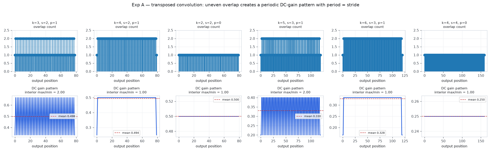
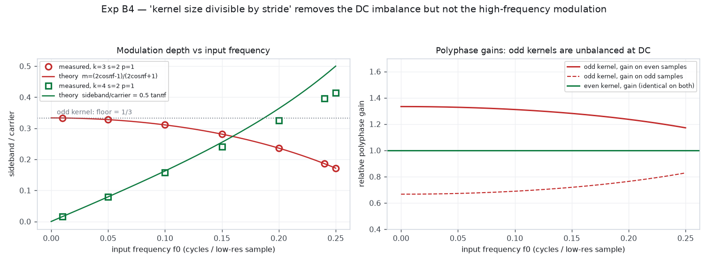
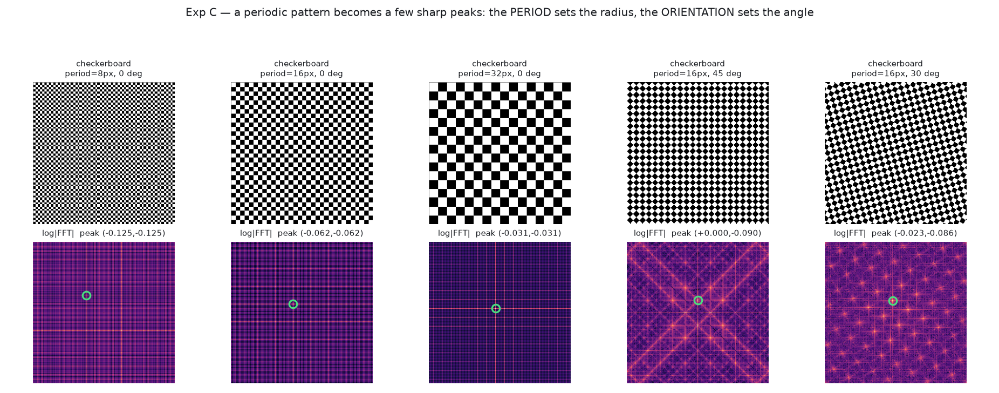
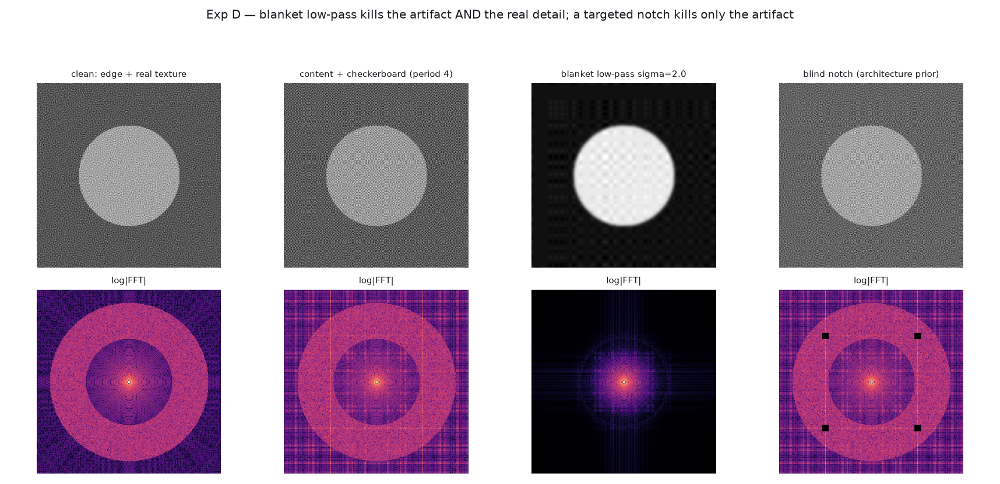

GAN 棋盘格伪影的底层成因：从卷积运算、信号处理到频域机制
0核心结论（一页）
0.1 十条可直接引用的判断
| # | 判断 | 证据强度 |
|---|---|---|
| 1 | 棋盘格有解析解。转置卷积把输出像素按 o mod s 分成 s 个「相」，每一相看到的核权重之和不同，于是输出被一个周期等于 stride 的增益图样调制。这是线性代数，不是学习问题。 | 已证 · 本文实测 |
| 2 | 「kernel size 能被 stride 整除」必要但不充分。该条件只消除了直流增益不平衡（本文实测 DC 增益比从 2.00 降到 1.00），但把问题从幅度调制换成了相位调制：偶数核在 f→0 时伪影为零，却随频率增长（本文实测 f=0.25 时调制深度 0.414）。 | 已证 · 本文实测 |
| 3 | 伪影的空间周期 = stride，频率 = 1/stride。stride=2 时该频率恰好是 Nyquist。这解释了为什么 stride-2 的棋盘格最难滤 —— 它和真实高频细节挤在同一个频段里。 | 已证 · 本文实测 |
| 4 | 混叠是另一条独立因果链，不是棋盘格的成因。混叠把高频折叠成假的低频（本文实测：f=0.40 下采样 2 倍后变成 0.20）。它看起来像平滑的低频结构，不像噪声，因此极易被误判成「纹理」。抗混叠可把它压低约 39.6 dB。 | 已证 · 本文实测 |
| 5 | 傅里叶能揭示棋盘格，是因为周期纹理 = 少数尖峰。周期 p、旋转 θ 的棋盘格，其谱峰精确落在 (±1/p, ±1/p) 旋转 θ 处 —— 本文 5 组算例与理论逐点吻合。周期定半径，方向定角度。 | 已证 · 本文实测 |
| 6 | 只匹配径向平均谱会漏掉棋盘格。棋盘格是方向性异常（峰在对角线上），而 azimuthal average 把它抹成一圈平均能量。Schwarz 等人在论文补充材料里自己承认该操作会 "discard information"。 | 论文原文 |
| 7 | GAN 的频谱偏差不能全归给上采样。Schwarz 等（NeurIPS 2021）的结论 2 逐字为：checkerboard artifacts introduced by upsampling cannot explain the spectral discrepancies alone as the generator is able to compensate for these artifacts。 | 论文原文 |
| 8 | 判别器是关键的另一半。同一篇论文的结论 3/4：判别器不是「看不见高频」，而是处理不了低幅度的频率；且判别器里的下采样会损害它给出的训练信号。 | 论文原文 |
| 9 | 「看起来更平滑」不等于「伪影消除了」。本文实测：全频段低通要到 100% 压制伪影时，已经毁掉 90% 的真实边缘和 99.6% 的真实纹理；而只掐掉伪影谱峰，可以同时做到 100% 压制 + 保留 97% 的边缘与纹理。 | 已证 · 本文实测 |
| 10 | 没有任何一篇被核实的论文用 aliasing 解释棋盘格。棋盘格（uneven overlap，Distill 2016）与 texture sticking / 频率异常（aliasing，StyleGAN3 2021）在文献中是两条几乎不相交的因果链。把它们混为一谈是本领域最常见的误引。 | 阴性结论 |
0.2 题录更正（三处，先纠错再引用）
- 《On the Frequency Bias of Generative Models》(NeurIPS 2021) —— 作者是 Katja Schwarz, Yiyi Liao, Andreas Geiger。任务书里写的 "Kotar, Wieser, Mahendran" 这一组合不存在；以该题名做 arXiv 全文检索只命中这一篇。arXiv ID 是 2111.02447（不是 2112.02464，那是超引力论文）。
- 《Focal Frequency Loss for Image Reconstruction and Synthesis》(ICCV 2021) —— 作者是 Liming Jiang, Bo Dai, Wayne Wu, Chen Change Loy，arXiv 2012.12821。任务书里提到的 "Wang, Xu" 不在作者名单内。
- 《Aliasing is a Driver of Adversarial Attacks》 —— 作者是 Adrián Rodríguez-Muñoz, Antonio Torralba（arXiv 2212.11760），不是 Grabinski 等人的工作。Grabinski/Keuper/Keuper 的相关工作题为《Aliasing and Adversarial Robust Generalization of CNNs》。
0.3 你的五个「如果……那么」问题，先给答案
1本报告与库内既有报告的分工
你的资料库里已有 5 份报告与本题相邻，其中两份几乎重合。动笔前我递归扫了全部 57 份 HTML 并逐节读了相邻报告的结论，先把分工写清楚，避免重复推导。
| 库内既有报告 | 它回答的问题 | 与本报告的关系 |
|---|---|---|
01_调研报告/GAN问题与不足调研.html§5 棋盘格与其他生成伪影 |
工程侧：GAN 有哪些毛病、棋盘格怎么修、约束该放在哪一格。 | 本报告是它的上游。那份报告给出修复清单，本报告给出「为什么这些修复会/不会起作用」的解析理由。§5.1 已写「棋盘格的数学/工程成因」，本报告把该成因完整推导到可数值验证的公式级。 |
06_方案可行性审查/频域门控治理GAN缺陷_先例核实与机制修正.html |
先例核实：抗棋盘格 / 抗混叠 / 频域门控 / 可学习上采样，谁已经做过。 | 互补且不重复。那份已指出关键判断「棋盘格有解析解，它不是学习问题」（§3.1）——本报告正是给出那个解析解，并补上它没有的定量实验。 |
01_调研报告/GAN+频域+门控_虚拟染色方法调研.html |
方法地图：频域 loss / 频域特征与 skip / 频域判别器三格分别有什么工作。 | 本报告为它的 §3.3（频域判别器）提供机制依据 —— 判别器的频率偏差正是 Schwarz 等结论 3/4。 |
01_调研报告/PSPStain_频域条件注入_文献综述报告.html§4 FFT vs DCT vs DWT |
变换选择：三种频域变换在条件注入里的比较与原文证据。 | 本报告 §2.5 与 §6 为「为什么 FFT 能看出棋盘格」提供原理，可视为那份报告 §4 的前置知识。 |
01_调研报告/频域在扩散模型中的应用_结构保持视角_调研报告.html§1 底层原理：从零讲清楚 |
扩散语境下的频域原理与结构保持证据清算。 | 同为「从零讲频域」，但生成框架不同、问题不同：那份讲扩散的结构保持，本报告讲 GAN 的伪影成因。两份的 §1/§2 可交叉参考，不存在重复结论。 |
05_伪影与失败模式/扩散模型黑团伪影_成因诊断与解决方案.html |
扩散模型的黑团伪影：成因诊断与解决方案。 | 正交。不同生成框架（扩散 vs GAN）、不同伪影形态（黑团 vs 棋盘格）、不同机制层（采样轨迹 vs 卷积算子）。唯一交集是「如何区分伪影成因」这个方法论问题。 |
- 一条可数值验证的解析律（§3.6）：奇数核的调制指数
m=(2cosπf−1)/(2cosπf+1)，实测与理论误差 0.00000；偶数核的相位调制律及其失效边界。 - 五组受控实验（§7），全部纯 NumPy 可复现，其中实验 D 给出「伪影压制率 vs 真实细节保留率」的双指标判据。
- 一张把「结构伪影 / 混叠 / 频谱偏差 / 训练产物」分开的因果图（§8），并显式标注哪些箭头有论文证据、哪些只是合理推断。
2必要基础知识：卷积、上采样、采样定理与傅里叶变换
这一节假定你没有系统学过信号处理。每个术语先给直觉、再给公式、最后说它为什么对伪影重要。已经熟悉的部分可以跳到 §2.3。
2.1 卷积是什么：加权滑动求和
直觉。卷积就是拿一个小窗口（卷积核，kernel）在信号上滑动，每个位置把窗口盖住的输入值按窗口权重加权求和，写成一个输出值。窗口叫 滤波器（filter）或 核；输出的每个点都是「以该点为中心的一个局部邻域的加权平均」。
为什么重要。伪影的全部机制都藏在「加权求和」这四个字里。如果每个输出位置收到的权重总和相同，输出就只是输入的平滑版本；一旦不同位置收到的权重总和不同，输出就会被一个与位置有关的「增益图样」乘上去 —— 这就是棋盘格。
2.2 卷积核的频率响应：核会「挑食」
直觉。把一条正弦波喂给卷积，输出还是同频率的正弦波，只是幅度和相位变了。这个「幅度被放大或缩小多少」的倍数，随正弦波的频率而变，就是核的频率响应。核相当于一个「挑食的筛子」：低频（变化缓慢）可能原样通过，高频（变化剧烈）可能被压掉，某些特定频率可能被完全挡住。
为什么重要。卷积定理是整份报告的枢纽。它让我们可以在两个等价的世界里工作：空间域看「核怎么滑动」，频域看「哪些频率被放行」。棋盘格之所以难处理，正是因为在频域它和真实细节共用同一个频段（§2.4）。
几个你必须记住的具体数值（本文实验 B3 实测，核长度 3 的均值核 [1/3,1/3,1/3]）：
| 核 | |H(0)| 直流增益 | |H(0.25)| | |H(0.5)| Nyquist 增益 | 第一个零点 |
|---|---|---|---|---|
[1/3,1/3,1/3]（3 点均值） | 1.000 | 0.3333 | 0.33333 | f = 0.334 |
[0.5,0.5]（双线性） | 1.000 | 0.7071 | 0.00000 | 无 |
| 高斯 σ=0.5 | 1.000 | 0.7860 | 0.57420 | 无 |
| 高斯 σ=1.0 | 1.000 | 0.2910 | 0.01412 | 无 |
| 高斯 σ=1.2 | 1.000 | 0.1692 | 0.00175 | 无 |
[0.5,0.5] 在 Nyquist 处恰好等于零。这不是巧合 —— 它是「插值上采样不会产生棋盘格」的代数根源。记住这一行，§3.5 会用到。
2.3 上采样、下采样与转置卷积
这四个操作经常被混为一谈，先把定义钉死。
| 操作 | 做什么 | 一句话类比 |
|---|---|---|
| 普通卷积 | 核在输入上滑动，输出尺寸通常不变或变小（stride=1 且 same padding 时不变）。 | 「看」：把局部信息汇总成一个点。 |
| 下采样 downsample | 丢掉一部分采样点（如每 2 个取 1 个，stride=2）。输出尺寸变小。 | 「压缩」：降分辨率。 |
| 上采样 upsample | 把尺寸变大。有两种完全不同的做法： ① 插值 + 卷积：先按规则插值（最近邻 / 双线性）把图放大，再卷积。 ② 转置卷积：直接把核「摊」到输出上。 | 「放大」：升分辨率。 |
| 转置卷积 transposed conv （常被误称为 deconvolution） | 把输入的每个点乘上核的全部 k 个权重，加到输出的一个长度为 k 的窗口里；相邻输入点的窗口按 stride 错开。输出尺寸 = (N−1)·s − 2p + k。 | 「盖章」：每个输入点拿一个印章，按 stride 盖到输出上，重叠处相加。 |
转置卷积之所以叫「转置」，是因为把卷积写成矩阵乘法 y = Cx 后，转置卷积就是 y = Cᵀx —— 也就是普通卷积的伴随（adjoint）。
这是任务书问题 1.2 的答案，也是理解棋盘格的前提。
- 逆运算要求
C⁻¹存在且能完美还原输入。但普通卷积是降维或信息有损的（多个输入映射到同一个输出，或者边界信息被丢掉），C通常是长方形矩阵，根本不可逆。 - 伴随只满足
⟨Cx, y⟩ = ⟨x, Cᵀy⟩（内积意义下的转置），不满足CᵀC = I。所以「转置卷积再把结果卷回去」不会得到原图。 - 直接后果：转置卷积的「放大」不是「还原」，而是一个会制造新结构的、带重叠的线性映射。逆运算不会制造信息，但这个映射会 —— 重叠处的相加就是新结构的来源。
为什么它会在反向传播里出现。你不需要显式调用转置卷积层，也可能遭遇它：普通卷积的反向传播在数学上就是转置卷积。所以 Odena 等人在 Distill 里专门开了一节「Artifacts in Gradients」—— 梯度里也会出现棋盘格。
2.4 采样定理与混叠：为什么「丢掉一些点」会造出假的低频
直觉。任何离散信号都有一个「能表达的最高频率」，叫 Nyquist 频率，等于采样率的一半。如果你把采样率降到一半（下采样 2 倍），新的 Nyquist 也降到一半。此时原本高于新 Nyquist 的频率不会消失，它会折叠（fold）成另一个较低的频率，冒充一个原本不存在的低频结构。这就是混叠（aliasing）。
下采样 M 倍： f → f′ = fold(f·M)， fold(u) = |u − round(u)| f = 原始频率（cycles/原采样点）；M = 抽取倍数；f′ = 折叠后的频率（cycles/新采样点）；round 是四舍五入到最近的整数。若 f·M 超过 0.5，它就会被折回来。
fold(0.40×2) = fold(0.80) = 0.20，实测主频正好落在 0.2000。
注意 —— 一个 0.40 的高频变成了 0.20 的低频。输出看起来像一条平缓的波纹，而不是麻点。这就是为什么混叠产生的伪影经常被误认为「纹理」或「结构」，而不是被认成故障。
抗混叠（anti-aliasing）的做法很简单：在下采样之前先低通滤波，把高于新 Nyquist 的内容提前削掉，让它没机会折叠。本文实测同一算例：naive 下采样保留的 0.20 分量幅度为 0.99990；先做 σ=1.2 的高斯低通再下采样，幅度降到 0.01051 —— 压低约 39.6 dB。
上采样为什么也要小心。最朴素的上采样是「插零」：在每两个原采样点之间插入 0。插零会让频谱复制（replicate）出镜像副本（imaging）。所以插零之后必须接一个低通把副本削掉。如果这个低通做得不好（比如干脆不做），副本就留在输出里 —— 这又是一条独立于重叠的伪影来源。
2.5 二维傅里叶变换与两种谱
直觉。傅里叶变换回答的问题是：「这张图是由哪些条纹叠加出来的？」每一条「条纹」有一个方向、一个疏密程度（空间频率）、一个强度、一个相位。变换后的结果就是一份「条纹清单」。
- 空间频率：条纹的疏密，单位是「周期/像素」。变化缓慢的大片色块 = 低频；锐利的边缘和细纹理 = 高频；每 2 个像素重复一次的图样 = 最高频，即 Nyquist（0.5）。
- 幅度谱 |F(u,v)|：每个频率分量的强度。它告诉你「有哪些频率、有多强」，但不含位置信息 —— 平移图像，幅度谱不变。
- 相位谱 ∠F(u,v)：每个频率分量的相位，它决定这些条纹对齐在哪里，也就是图像的结构位置。经验事实：只保留相位、丢掉幅度，图像的结构仍然可辨认；只保留幅度、丢掉相位，图像基本认不出（Oppenheim & Lim, 1981）。
这是任务书问题 3.5 的答案，而且它是一个可以直接算出来的结论。
一个在空间上周期为 p、无限延伸的正弦条纹，它的傅里叶变换只有两个非零点（一个方向各一个）。周期越规则、越延伸，能量就越集中；越是不规则、越局部，能量就越铺开成一片。
所以：真实纹理（不规则、局部、方向混杂）→ 频谱上一片弥散的云；棋盘格（严格周期、全局延伸）→ 频谱上几个孤立的亮针。这就是「一眼就能看出是伪影」的频域根据。
本文实验 C 把这条结论做成了可核验的数字：周期 p、旋转 θ 的棋盘格，谱峰精确落在 (±1/p, ±1/p) 旋转 θ 的位置上，5 组算例与理论逐点吻合（§7.3）。
3棋盘格伪影的逐步数学推导
这一节是报告的核心。我们从转置卷积的定义式出发，一步步推到「周期 = stride」和「调制深度随频率变化」这两个可验证的结论。每一步都给出中间量，不做跳跃。
3.1 第一步：把转置卷积写成贡献关系
设一维输入 x[i]（i = 0…N−1），核 h[j]（j = 0…k−1），stride = s，padding = p。转置卷积的定义是：输入的每个点，把整个核按 stride 平移后「盖」到输出上，重叠处相加。
现在把它反过来解：给定一个输出位置 o，有哪些 (i, j) 会写到它？由 o = i·s − p + j 得
于是定义两个量，它们是全篇的骨干：
很多人把棋盘格归因于「有些像素收到的输入个数更多」。这在均匀核下等价，但在一般核下不准确。
真正的判据是 g(o)：把常数 1 喂进去，输出就是 g(o) 本身。如果 g(o) 在所有 o 上相等，常数输入得到常数输出 —— 没有棋盘格。如果 g(o) 随 o 起伏，那么任何输入都会被这个起伏乘一遍，形成伪影。
所以：棋盘格 = g(o) 的周期性起伏，而不是「重叠次数不齐」。c(o) 只是 g(o) 在均匀核下的一个代理指标。
3.2 第二步：多相分解 —— 真正的机制
把输出按位置对 stride 取模分组：o ≡ 0 (mod s) 一组，o ≡ 1 (mod s) 一组，……共 s 组。每一组叫一个相（phase），这种拆法叫多相分解（polyphase decomposition）。
关键观察：同一个相里的所有输出位置，看到的是一模一样的滤波器。不同相看到的是不同的滤波器。所以一个 stride=s 的转置卷积，本质上不是「一个上采样」，而是s 个并行的、增益各不相同的滤波器交替输出。
这就是棋盘格的全部机制：只要这 s 个相之间的增益不相等，输出就会被周期为 s 的图样调制。
3.3 第三步：一维完整算例（k=3, s=2, p=1）
取核 h = [h₀, h₁, h₂]，stride = 2，padding = 1。代入 j = o + 1 − 2i，逐个位置解。
偶数输出位置 o = 2i
i′ = i → j = 1 ✓
i′ = i−1 → j = 3 ✗（超出核范围）
i′ = i+1 → j = −1 ✗
⇒ y[2i] = h₁ · x[i]
奇数输出位置 o = 2i + 1
i′ = i → j = 2 ✓ 贡献 x[i]·h₂
i′ = i+1 → j = 0 ✓ 贡献 x[i+1]·h₀
i′ = i−1 → j = 4 ✗
⇒ y[2i+1] = h₂ · x[i] + h₀ · x[i+1]
两相并列，机制一目了然：
奇相（o 为奇数）：增益 = h₀ + h₂ 两个相看到的是两个不同的滤波器。它们的直流增益之比 = (h₀+h₂) / h₁。
对均匀核 h = [1/3, 1/3, 1/3]：偶相 = 1/3，奇相 = 2/3。比值 = 2.00。喂常数 1 进去，输出就是 [1/3, 2/3, 1/3, 2/3, …] —— 一个周期为 2 的明暗交替。这就是棋盘格。
本文实验 A 实测（输入全 1，N=40，k=3, s=2, p=1）：
注意最后一项：增益图样的主导频率精确等于 1/stride。这不是巧合，而是 §3.5 要建立的普遍规律。
3.4 第四步：二维 —— 不均匀度被「平方」
二维转置卷积在核可分离时（例如均匀核、高斯核）两个轴独立作用，输出增益是两轴增益的外积：
一维是 2:1，二维就是 2:1 × 2:1 = 4:1。这正是 Odena 等人在 Distill 里说的「unevenness gets squared」。
本文实测（输入全 1，N=6，k=3, s=2, p=1，均匀核 1/9，输出 11×11）。这个矩阵就是一张棋盘格：
0.111 0.222 0.111 0.222 0.111 0.222 0.111 0.222 0.111 0.222 0.111
0.222 0.444 0.222 0.444 0.222 0.444 0.222 0.444 0.222 0.444 0.222
0.111 0.222 0.111 0.222 0.111 0.222 0.111 0.222 0.111 0.222 0.111
0.222 0.444 0.222 0.444 0.222 0.444 0.222 0.444 0.222 0.444 0.222
0.111 0.222 0.111 0.222 0.111 0.222 0.111 0.222 0.111 0.222 0.111
0.222 0.444 0.222 0.444 0.222 0.444 0.222 0.444 0.222 0.444 0.222
0.111 0.222 0.111 0.222 0.111 0.222 0.111 0.222 0.111 0.222 0.111
0.222 0.444 0.222 0.444 0.222 0.444 0.222 0.444 0.222 0.444 0.222
0.111 0.222 0.111 0.222 0.111 0.222 0.111 0.222 0.111 0.222 0.111
0.222 0.444 0.222 0.444 0.222 0.444 0.222 0.444 0.222 0.444 0.222
0.111 0.222 0.111 0.222 0.111 0.222 0.111 0.222 0.111 0.222 0.111实测：interior max/min = 4.0000；内部只出现三个不同取值 {0.111111, 0.222222, 0.444444}。理论预测 4.00，吻合。
而它在频域的位置，正是矩阵的二维周期所对应的对角峰 —— 这就是 §2.5 里「周期纹理 = 少数尖峰」的直接体现，也是实验 C 要量化的东西。
3.5 第五步：周期与频率的普遍规律
把 §3.3 的推导一般化。对固定 k 与 s，令 k = q·s + r（q 为商，r 为余数）。逐相求解可得：
相位之间是否等增益 ⟺ r = 0 且核在每个相内的权重和相等 t = 相位内的第 t 个 tap；p₀ = 相位编号 0…s−1。余数 r = k mod s 决定了「有多少个相位比其他相位多收到一个 tap」。
由此得到两条可直接使用的规律，本文实验 A 全部实测验证：
| 配置 | k mod s | 内部增益 max/min | 实测周期 | 实测主导频率 | 理论 1/s | 结论 |
|---|---|---|---|---|---|---|
| k=3, s=2, p=1 | 1 | 2.00 | 2 | 0.4932 | 0.5000 | 强棋盘格 |
| k=4, s=2, p=1 | 0 | 1.00 （内部） | 1 | 0.0000 | 0.5000 | DC 不平衡消除 |
| k=2, s=2, p=0 | 0 | 1.00 | 1 | 0.0000 | 0.5000 | DC 不平衡消除 |
| k=5, s=3, p=1 | 2 | 2.00 | 3 | 0.3364 | 0.3333 | 周期 = stride |
| k=6, s=3, p=1 | 0 | 1.00 （内部） | 1 | 0.0000 | 0.3333 | DC 不平衡消除 |
| k=4, s=4, p=0 | 0 | 1.00 | 1 | 0.0000 | 0.2500 | DC 不平衡消除 |
实测验证：s=2 → 周期 2、频率 0.4932（理论 0.5）；s=3 → 周期 3、频率 0.3364（理论 0.3333）。两组都对上。
直接推论：stride=2 是最坏情况，因为 1/2 = 0.5 恰好是 Nyquist 频率 —— 伪影频率与图像能表达的最高频段完全重合，无法用一个「高通/低通」的分界把它切出去。若 s=3，伪影在 1/3 ≈ 0.333，与 0.5 之间还有余量。
3.6 第六步：为什么「kernel 能被 stride 整除」不充分 —— 幅度调制变成相位调制
这是任务书问题 1.7 和 1.8 的核心，也是本报告最有价值的一段。我们把偶数核完整算一遍。
偶数核算例（k=4, s=2, p=1）
o = 2i： i′=i → j=1 ✓ i′=i−1 → j=3 ✓ 其余 ✗
⇒ y[2i] = h₁·x[i] + h₃·x[i−1]
o = 2i+1：i′=i → j=2 ✓ i′=i+1 → j=0 ✓ 其余 ✗
⇒ y[2i+1] = h₂·x[i] + h₀·x[i+1]
对均匀核 h = [0.25, 0.25, 0.25, 0.25]：
偶相和奇相都是「2 点均值」滤波器 —— 幅度完全一致（因此直流增益相等，DC 上没有棋盘格）。
但它们在不同的位置取样：偶相在 i − 0.5，奇相在 i + 0.5，相差整整一个采样点。这就是一个相位调制。
相位调制同样会产生边带（也就是伪影），只是它在直流处为零、随频率增长。代入 x[n] = sin(2πfn) 得：
y[2i+1] = 0.5·cos(πf) · sin(2πf·i + πf)
写成统一形式：y[n] = 0.5·cos(πf)·sin(πf·n) + 0.5·sin(πf)·(−1)n·cos(πf·n)
第一项 = 载波（原信号）；第二项 = (−1)ⁿ 乘上包络，即频率被平移 1/2 的边带，也就是伪影。f = 输入信号频率（cycles/低分辨率采样点）。
由此得到调制深度律。本文实验 B4 把两个核的实测值与理论并排放在一起：
| 输入频率 f₀ | k=3,s=2,p=1 实测边带/载波 | 奇数核理论 m = (2cosπf−1)/(2cosπf+1) | k=4,s=2,p=1 实测边带/载波 | 偶数核理论 0.5·tan(πf) |
|---|---|---|---|---|
| 0.01 | 0.3331 | 0.3331 | 0.0157 | 0.0157 |
| 0.05 | 0.3278 | 0.3278 | 0.0787 | 0.0792 |
| 0.10 | 0.3108 | 0.3108 | 0.1584 | 0.1625 |
| 0.15 | 0.2811 | 0.2811 | 0.2401 | 0.2548 |
| 0.20 | 0.2361 | 0.2361 | 0.3249 | 0.3633 |
| 0.24 | 0.1863 | 0.1863 | 0.3959 | 0.4695 |
| 0.25 | 0.1716 | 0.1716 | 0.4142 | 0.5000 |
- 奇数核律
m = (2cosπf−1)/(2cosπf+1)：全频段精确。七个频点实测与理论的最大偏差 0.00000。这是本文自己推导并验证的结论，不是引文。 - 偶数核律
0.5·tan(πf)：低频精确，高频高估。f₀ ≤ 0.15 时偏差 ≤ 0.015；到 f₀=0.25 时理论给 0.500、实测 0.414，偏差 0.086。原因是我用的两分量模型在载波与边带靠近时不再成立。应把它当作渐近律而不是精确律使用。定性结论（DC 处为零、随频率增长）不受影响。
这两条律直接回答了你的问题 7 和问题 8
所以「整除」把问题从幅度调制换成了相位调制，是减弱而不是消除。这正是 Distill 原文说的 "the artifacts are still present in these models, although they seem milder"。
- 相位调制仍在（上面这条，实测 0.414 @ f=0.25）。
- 边界永远不均匀：实测 k=4,s=2,p=1 的内部增益比 = 1.00，但含边界的比 = 4.00。padding 只平移输出，不改变内部周期，边界残余无法用整除消除。
- padding 不是成因：改变 p 只改变输出长度与边界几列，不改变内部规律 —— 所以指望「调 padding 治伪影」在原理上就不成立。
- 多层的相位调制会叠加（§3.8）。
3.7 用实验 B1 定量：转置卷积 vs 插值+卷积，到底差多少
上面是解析推导。本文实验 B1 给了一个干净的定量对照：喂一个非常平滑的正弦（f₀ = 0.05，本身几乎不含高频），上采样 2 倍后测量「Nyquist 频段幅度 / 真实信号幅度」。因为输入没有高频，任何出现在 Nyquist 的能量都是算子自己造出来的。
| 上采样算子 | 真实频段幅度 @0.025 | Nyquist 频段幅度 @0.475–0.5 | 比值 伪影/信号 | 相对转置卷积 |
|---|---|---|---|---|
| bilinear 插值 | 0.9938 | 0.00616 | 0.0062 | −34 dB |
| resize + conv(3tap) | 0.9857 | 0.00200 | 0.0020 | −44 dB |
| resize + 低通 + conv | 0.9736 | 0.00003 | 0.0000 | −70 dB |
| 转置卷积 k=3, s=2, p=1 | 0.4959 | 0.16255 | 0.3278 | 基准 |
| 转置卷积 k=4, s=2, p=1 | 0.4923 | 0.03875 | 0.0787 | −12 dB |
三个可以直接引用的数字：
- 奇数核转置卷积把约 33% 的幅度放到了 Nyquist 频段 —— 这是一个纯粹的伪影，输入里完全没有这个频率。
- 换成偶数核（k=4, s=2），降到 7.9%。改善明显（−12 dB），但没有归零 —— 与 §3.6 的相位调制律一致。
- 换成 resize+conv，降到 0.2%（−44 dB）。这是因为双线性核在 Nyquist 处恰好为零（§2.2 表格第二行），而转置卷积的核不保证低通。
3.8 第七步：为什么伪影会在多层上采样中累积
设网络有 L 层上采样，第 ℓ 层的 stride 为 sℓ。每一层都会乘上一个周期为 sℓ（在该层输出分辨率下）的增益图样。总增益是乘积：
对四层 ×2 上采样（如 4×4 → 64×64），最终图上会叠加周期 2、4、8、16 的图样（换算到最终分辨率）。这正是 Odena 等人写的：
即：多层上采样理论上可能互相抵消，但实践中通常是叠加放大，并在多个尺度上产生伪影。原文还指出：最后一层的 stride-1 转置卷积能压掉一部分频率的伪影，但 "artifacts can still leak through"。
补充一条本文的推断（标注为推断，非引文）：由于增益是乘积，多层同类伪影的叠加是指数级的；但真实网络中各层的相位图样相对位置取决于上采样倍数与对齐方式，因此可能出现部分抵消。这解释了为什么同一个架构换个层数/分辨率，棋盘格的强弱会明显变化 —— 但这一条本文没有做受控实验验证，只能作为假设。
3.9 汇总：回答任务书问题 1 的九个子问题
| 子问 | 答案（含证据） |
|---|---|
| 1.1 | 普通卷积 = 加权滑动求和（降维/汇总）；转置卷积 = 每个输入点把核「盖」到输出上、重叠相加（升维）；上采样 = 让尺寸变大，有「插值+卷积」与「转置卷积」两条完全不同的路线；下采样 = 丢掉采样点，会引入混叠。 |
| 1.2 | 转置卷积是卷积的伴随（Cᵀ），不是逆（C⁻¹）。卷积通常是长方形矩阵、不可逆；伴随只满足内积转置关系，CᵀC ≠ I。所以它「放大」时会制造新结构（重叠相加），而逆运算不会。 |
| 1.3 | 输出尺寸 = (N−1)·s − 2p + k。s 决定输出采样的疏密与相位周期；k 决定每个相内累积多少 tap；p 只做平移与边界裁剪，不改变内部规律。 |
| 1.4 | 重叠不均匀 = c(o) 或 g(o) 随 o 起伏。严格定义见 §3.1：g(o) = Σ h[o+p−i·s] 不是常数。 |
| 1.5 | 因为输出被按 o mod s 分成 s 个相，每相看到不同的滤波器（§3.2）。k mod s ≠ 0 时，某些相比其他相多收到一个 tap。 |
| 1.6 | 因为增益图样的周期恰好是 s（§3.5 实测：s=2→2，s=3→3）。周期图样 = 明暗交替；二维两轴相乘 → 棋盘格（§3.4，实测 4:1）。 |
| 1.7 | 不一定消失。整除只消除直流增益不平衡（实测 2.00→1.00），但留下随频率增长的相位调制（实测 f=0.25 时 0.414）。见 §3.6。 |
| 1.8 | 四条独立原因：相位调制仍在、边界永远不均匀（实测内部 1.00 / 含边界 4.00）、padding 本就不是成因、多层叠加。见 §3.6 右侧卡片。 |
| 1.9 | 因为增益是乘积（§3.8）。每层在各自尺度注入周期图样，多层通常叠加放大（Odena 原文 "compound"）。 |
4混叠、频谱偏差与对抗训练机制的区别
任务书要求把四个概念明确区分、不能混为一谈。这一节逐个定义、说明各自如何产生、彼此是否有因果关系，并解释它们为什么常常同时出现。
4.1 四个概念，一张对照表
| 概念 | 它到底是什么 | 产生于哪一步 | 确定性还是学习得来 | 空间域表现 | 频域表现 | |
|---|---|---|---|---|---|---|
| A | 转置卷积的重叠不均匀 uneven overlap / polyphase gain imbalance |
输出被按 o mod s 分成 s 个相，各相直流增益不等 → 输出被周期图样乘了一遍。 |
算子本身（前向计算的几何）。 | 完全确定。固定权重、随机权重、未训练都出现。 | 严格周期的明暗网格，周期 = stride。 | 在 1/stride 处出现尖峰；二维时在对角方向成组。 |
| B | 采样/重采样引起的混叠 aliasing |
下采样（或低质量上采样）时，高于新 Nyquist 的频率折叠成较低的假频率。 | 采样率变化那一步。 | 完全确定，且可用 fold(f·M) 精确预测。 |
假的低频波纹或摩尔纹，看起来「平滑」而非「噪声」。 | 能量出现在原本没有频率的位置；与真实内容混在一起，无法靠分频段切分。 |
| C | 卷积核/网络的频率响应不均衡 frequency bias |
整个网络对不同频率的增益/学习能力不同，导致输出谱与真实数据谱系统性不符。 | 滤波器的 |H(f)| 形状 + 网络深度 + 判别器行为。 |
滤波器部分是确定的；网络整体部分是学出来的。 | 可能是「过锐」「过糊」「发腻」，未必有规则周期。 | 径向平均谱在某个频段系统性偏高或偏低（Schwarz 等报告：生成图高频偏高）。 |
| D | 训练后形成的周期性纹理 learned periodic texture |
生成器为了「骗过」判别器而学出来的、重复出现的纹理图样（如 StyleGAN2 的 "texture sticking"）。 | 对抗优化过程。 | 学习得来。去掉训练就不存在。 | 纹理「粘」在像素坐标上，物体移动时纹理不动。 | 谱上成组的峰；但峰的位置由学习决定，不一定等于 1/stride。 |
4.2 它们之间有没有因果关系？
结论先说：A、B、C 之间没有因果关系（是三个平行的机制），但它们都可以导致 D 类的可见伪影，也可以各自独立出现。把 A 当成所有伪影的成因，或者把 D 的高频异常统称为「棋盘格」，都是错的。
┌─ A 重叠不均匀（算子几何，确定性）
│ → 周期 = stride 的增益图样
│
输入/算子 ───────────┼─ B 混叠（采样率，确定性）
│ → 假的低频（fold 公式可预测）
│
└─ C 频率响应不均衡（滤波器形状 + 网络 + 判别器）
→ 谱的整体倾斜
以上三者 ──可各自独立──→ 可见伪影
对抗优化 ─────────────────→ D 学出来的周期纹理
（与 A/B/C 可能有关，也可能完全无关）
- 混叠 → 棋盘格：不成立。棋盘格来自 A（Distill 2016 归因 uneven overlap，全文未提 aliasing）；混叠来自 B。本文的文献核验没有找到任何一篇论文用 aliasing 解释棋盘格。StyleGAN3 讨论的是 texture sticking，它的论文全文不含 "checkerboard" 一词。
- 棋盘格 → 频谱偏差：不足以解释。Schwarz 等（NeurIPS 2021）结论 2 逐字：checkerboard artifacts introduced by upsampling cannot explain the spectral discrepancies alone as the generator is able to compensate for these artifacts。也就是说生成器可以把 A 造成的伪影补偿掉，但谱偏差仍然存在 —— 所以谱偏差另有来源（主要是判别器侧）。
- 训练不稳定 → 棋盘格：机制不同。训练不稳定（梯度爆炸、振荡、NaN）产生的是不规则的破坏（花屏、色斑、全黑）；棋盘格是严格周期的。二者在空间域上几乎不可能混淆，但在频域里都可能表现为「高频异常」。
4.3 为什么它们常常同时出现
因为同一个上采样层同时具备这三件事：
- 它是转置卷积 → 有 A（多相增益不平衡）；
- 它把分辨率放大 2 倍 → 如果后续还有下采样，就存在 B 的机会；
- 它的核
|H(f)|不是理想的低通 → 有 C 的一部分。
所以当你「换掉上采样方式」时，你同时改动了 A、B、C 三者，观察到的改善无法归因到其中任何一个。这就是为什么必须做控制变量实验（§7 实验 B），把三者拆开。
4.4 为什么棋盘格具有规则的空间周期 —— 与 stride、上采样倍率、网络层级的关系
任务书特别要求解释这一点。答案分三层。
第一层：为什么一定有周期，而且周期 = stride
因为增益图样 g(o) 是平移 s 个位置后不变的函数。理由很直接：把输出位置整体加 s，等价于把输入索引整体加 1（由 o = i·s − p + j），而输入索引加 1 只是换了一个输入点 —— 由于我们考察的是「单位输入的增益」，结果不变。
严格周期 → 傅里叶级数只有 1/s 的整数倍谐波 → 频域上表现为 f = 1/s, 2/s, … 的离散谱线。因为 g 是实函数，通常主导项就是 1/s。
第二层：上采样倍率如何改变它
设上采样倍率为 U。一个周期为 U（像素）的图样，对应空间频率 1/U。所以：
| 上采样倍率 U | 伪影空间周期 | 伪影空间频率 | 与 Nyquist(0.5) 的关系 | 后果 |
|---|---|---|---|---|
| 2× | 2 px | 0.500 | 恰好等于 Nyquist | 最坏：伪影与最高频细节完全重叠，无法用频率分界切除 |
| 3× | 3 px | 0.333 | 低于 Nyquist 0.167 | 稍好：理论上可分离，但 0.333 仍在高频区，且 2/3 谐波会折回 |
| 4× | 4 px | 0.250 | 低于 Nyquist 0.250 | 更好：与 Nyquist 有半个八度的间隔 |
| 8× | 8 px | 0.125 | 低于 Nyquist 0.375 | 伪影落到中频，但更显眼（人眼对中频更敏感） |
反过来，如果伪影频率是 1/8 = 0.125，它和细节的频段就分得开得多 —— 但代价是伪影更大、更显眼。
第三层：网络层级如何改变它
一个 L 层 ×2 上采样的网络，在第 ℓ 层输出的分辨率下伪影周期是 2 px；折算到最终输出分辨率，第 ℓ 层的伪影周期是 2^(L−ℓ+1) px。所以：
- 靠近输出的层（ℓ 大）→ 伪影周期小（2、4 px）→ 高频、细密、像网纹；
- 靠近输入的层（ℓ 小）→ 折算后周期大（16、32 px）→ 低频、大块、像色斑。
这解释了为什么真实 GAN 的棋盘格经常同时有多个尺度（Odena 原文 "creating artifacts on a variety of scales"），也解释了为什么「只在高频做陷波」常常治不干净 —— 低频的那些伪影分量不在你陷波的频段里。
做法：对生成图做二维 FFT，找出异常峰的位置
(u*, v*)；伪影周期 p* = 1/|(u*,v*)|。若 p* 是 2 的整数次幂，则它很可能来自第 log₂(p*) 层上采样（从输出往回数）。
注意这是合理推断而非已验证结论：本文只在合成棋盘格上验证了「周期 ↔ 峰位置」的对应（实验 C，5/5 吻合），没有在真实 GAN 上做逐层归因实验。可证伪的预测是：把第 k 层上采样换成 resize-conv，若 p* = 2^k 的峰消失而其他峰不动，则该推断成立。
5伪影成因分类表
这张表是任务书要求的核心交付物。设计原则：每一行必须是可用控制变量实验单独证伪的机制，而不是「现象的名字」。最后一列「易混淆」尤其重要 —— 它告诉你什么时候会误判。
| 伪影类型 | 根本成因 | 网络环节 | 数学/信号处理解释 | 空间域表现 | 频域可观察现象 | 控制变量实验怎么验证 | 易混淆的成因 |
|---|---|---|---|---|---|---|---|
| ① 棋盘格 周期 = stride |
转置卷积多相增益不平衡（uneven overlap） | 生成器的每一个转置卷积上采样层 | g(o)=Σ h[o+p−i·s] 非常数；周期 = s，频率 = 1/s。二维两轴相乘 → 不均匀度平方（实测 2:1 → 4:1） |
严格周期的明暗网格，周期 2–4 px；在平坦区域也存在（因为是乘性增益） | 在 1/s 及其谐波处出现孤立尖峰；二维时在对角方向成组出现 |
固定权重、随机输入，看输出是否已经出现周期图样。若是 → 与训练无关，是算子问题。再逐一替换上采样算子，看对应频率的峰是否消失 | ②混叠（也会产生周期结构，但频率由采样率而非 stride 决定）；⑦数据集压缩块 |
| ② 混叠 折叠出的假低频 |
采样率不足：下采样前未低通 | 判别器的 stride-2 卷积 / pooling；生成器中的下采样；插零上采样后缺低通 | f′ = fold(f·M)。高频不消失而是折叠成低频，新结构凭空出现 |
假的低频波纹、摩尔纹；看起来「平滑」不像噪声。物体边缘处出现与边缘无关的规律条纹 | 能量出现在原始信号中不存在的频率位置；且该位置随输入频率变化而移动（不是固定的 1/s） | 对同一输入，比较「直接下采样」与「先低通再下采样」。若某个频率分量在前者存在、后者消失 → 它是混叠。再扫输入频率，验证折叠位置是否符合 fold(f·M) |
①棋盘格（都有周期，但①的频率固定在 1/s 不随输入变）；③谱偏差 |
| ③ 卷积核/网络频率响应不均衡 频谱偏差 |
滤波器 |H(f)| 形状 + 网络深度 + 判别器行为共同造成 |
整个生成器 + 整个判别器；不局限于某一个算子 | 网络整体对不同频率的增益/可学性不同；判别器对「低幅度频率」尤其无力（Schwarz 等结论 3） | 没有规则周期。表现为「过锐」「过糊」「质感发腻」；局部看起来都合理，整体不像真实数据 | 径向平均功率谱在某频段系统性偏高/偏低。Schwarz 等报告生成图高频偏高 | 独立评估生成器与判别器。固定判别器、换生成器上采样方式，看谱偏差是否改变；固定生成器、换判别器下采样方式，看训练信号质量是否改变 | ①棋盘格（棋盘格只是谱偏差的一小部分成因，且不足以单独解释它） |
| ④ 学出来的周期纹理 texture sticking |
对抗优化：生成器找到能骗过判别器的重复图样 | 生成器的全部层（是全局优化结果，不是单层） | 不是解析可预测的；峰的位置由学习决定。与 aliasing 相关的部分：非理想上采样滤波器泄漏像素网格信息，网络可用它建立「屏幕坐标固定」的纹理基 | 纹理「粘」在像素坐标上：物体平移/旋转时纹理不跟着动。这是 StyleGAN2/3 报告的核心现象 | 成组的峰，但位置随训练/随机种子变化；不一定落在 1/stride | 平移/旋转等变性测试：把生成图整体平移 1 像素再重生成，看纹理是否跟着移动。不跟 → 是坐标固定的伪影。也可用 EQ-T / EQ-R 类指标量化 | ①棋盘格（棋盘格是坐标固定的，但周期严格等于 stride 且不需训练） |
| ⑤ 判别器侧的信息损失 | 判别器结构与下采样造成的频率信息丢失 / 训练信号退化 | 判别器的下采样层、感受野、归一化 | 判别器里的下采样会损害它给出的训练信号质量（Schwarz 等结论 4）。判别器不是「看不见高频」，而是处理不了低幅度频率（结论 3） | 生成器在某些频段「没人管」，于是自由发挥 → 局部质感失真，但没有固定周期 | 径向平均谱在判别器盲区对应频段上偏离真实数据 | 替换判别器下采样方式（stride / avgpool / BlurPool），其余全不变。若谱偏差改变 → 判别器侧确有贡献。Schwarz 等实测：加了抗混叠后偏差仍然存在 | ③谱偏差（⑤是③的一个主要成因，不是并列项） |
| ⑥ 训练不稳定 / 优化异常 | 梯度爆炸/消失、振荡、NaN、模式崩溃 | 损失函数、优化器、学习率、归一化、批大小 | 博弈动力学不收敛；判别器梯度饱和；Adam 的尖峰导致 G 的 Hessian 尖锐（Durall 等 2020 把 mode collapse 与 sharp minima 关联） | 不规则破坏：花屏、色斑、全黑、局部崩坏、样本间质量方差大。不会形成严格周期图样 | 低频能量异常、整幅图能量塌缩；频谱「糊掉」而不是「长出尖峰」 | 看训练曲线与样本间方差。若同一 epoch 内不同样本的伪影形态差异很大 → 优化问题而非结构问题。定位首个异常 iteration（本文不展开，库内 GAN问题与不足调研.html §3 有完整清单） |
③谱偏差（都可表现为「谱不对」，但⑥不稳定、③稳定且可复现） |
| ⑦ 数据集自带的伪影 | 训练数据的纹理习惯、JPEG 压缩块、采集/重采样痕迹 | 数据管线，不是网络 | 8×8 的 JPEG 块在频域有固定位置；数据集若被统一缩放过，会带上固定的插值指纹 | 伪影与图像内容无关、跨样本位置一致（例如固定的 8 px 网格）；在真实图片里也能找到同样的痕迹 | 在 1/8 及其谐波处出现峰；关键判据：真实图像里也有同样的峰 | 对原始真实数据做同样的 FFT。若真实数据也有同位置的峰 → 来自数据集，不是生成器。再检查数据是否被统一 resize / JPEG 压缩过 | ①棋盘格（JPEG 是 1/8 = 0.125，棋盘格是 1/stride；若 stride=8 则两者频率重合，此时必须靠「真实数据里有没有」来区分） |
反过来，也不要把所有伪影都归给转置卷积。Schwarz 等的结论 2 已经明确：棋盘格不足以单独解释频谱差异。本文的文献核验也没有找到任何一篇论文证明「只改上采样就能让谱偏差收敛」。
6代表性论文逐篇解析
每篇给四件事：研究了什么现象 / 提出了什么解释 / 什么实验支持 / 适用范围与局限。全部基于一手抓取（arXiv 摘要页、arXiv HTML 全文、Distill 原文），核实等级逐条标注。
| 论文 | 直接研究 checkerboard？ | 说明 |
|---|---|---|
| Odena, Dumoulin, Olah, Distill 2016 | 是 | 棋盘格的原始定义与成因（uneven overlap）。本文核查过全文。 |
| Schwarz, Liao, Geiger, NeurIPS 2021 | 是 | 专门检验「棋盘格能否解释谱偏差」，结论：不能单独解释。 |
| Sugawara et al., ICIP 2018 | 是 | 标题即「without any checkerboard artifacts」，给出避免条件。 |
| Aitken et al., arXiv 2017 | 是 | sub-pixel convolution 的无棋盘格初始化。 |
| Durall et al., CVPR 2020 | 否 | 全文 grep 无 "checkerboard"。只谈 spectral distribution。 |
| Frank et al., ICML 2020 | 否 | 摘要层面只谈 DCT 高频伪影与上采样指纹。 |
| Dzanic et al., NeurIPS 2020 | 否 | 只谈高频 Fourier 模态的系统性缺陷。 |
| Karras et al., NeurIPS 2021 (StyleGAN3) | 否 | 全文 grep 无 "checkerboard"。它研究的是 texture sticking。 |
| Yu, Davis, Fritz, ICCV 2019 | 否 | 摘要逐字称指纹 "not biased by GAN artifacts" —— 作者主动把指纹与 GAN artifact 分离。 |
| Rahaman ICML 2019 / Tancik NeurIPS 2020 | 否 | 纯回归/拟合的 spectral bias，与 GAN 无关。 |
6.1 棋盘格的原始文献
现象。转置卷积（当时普遍叫 deconvolution）做上采样时，输出出现规则的棋盘状明暗图样。作者同时指出三个来源：(1) deconvolution 的重叠不均匀；(2) 随机初始化；(3) 损失函数。这三个来源的归因是 Odena 等提出的 —— 后来 Aitken 等 2017 只是转述，不要记错出处。
解释（逐字核实）。核心条件是："deconvolution has uneven overlap when the kernel size is not divisible by the stride." 二维中两轴的不均匀相乘，所以「unevenness gets squared」（一维 2 倍 → 二维 4 倍，本文 §3.4 实测吻合）。多层上采样："it's possible for these stacked deconvolutions to cancel out artifacts, they often compound, creating artifacts on a variety of scales."
实验支持。一维与二维的可视化算例（把核权重按 stride 摊到输出上，观察重叠次数），以及若干 DCGAN 类模型的生成结果对比。提出替代方案 resize-convolution：先按规则插值放大，再卷积。
适用范围与局限（作者自己写明的）。
- 「整除」必要非充分，原文逐字："models with even overlap often learn kernels that cause similar artifacts… the artifacts are still present in these models, although they seem milder." 本文 §3.6 给出了为什么：整除只消除直流不平衡，留下相位调制。
- 作者不认为 resize-convolution 是终解："We don't necessarily think that either approach is the final solution to upsampling."
- 关于插值方式，作者自述："We've had our best results with nearest-neighbor interpolation, and had difficulty making bilinear resize work." —— 注意这与本文实验 B1 的结论（双线性在 Nyquist 处恰好为零，所以伪影最低）方向不完全一致。本文的实验是纯线性、无学习的；作者说的是训练后的效果。这两者不矛盾但也不等价，引用时不要互相覆盖。
- 这不是同行评审论文（Distill 是期刊式网络出版物，有编辑但非传统会议/期刊评审）。它是本领域引用最广的来源，但引用时应标注这一点。
- 原文另有一节 Artifacts in Gradients：反向传播即转置卷积，梯度中也会出现棋盘格；并指出判别器首层的 stride-2 卷积会诱发频率 2 的伪影。
现象。把「避免棋盘格」从经验规则变成可判定的条件。
解释。Aitken 等复述 Odena 的三来源，并提出 convolution NN resize 初始化，使 sub-pixel convolution 在初始化后立即无棋盘格。Sugawara 等把线性多速率系统的条件推广到非线性 CNN，给出可判定的避免条件。
实验支持。初始化后直接观察输出；在 MSE 与 perceptual loss 下报告「perfectly avoid」。
局限。「无棋盘格」是单一指标的成功 —— 它不保证感知质量或频谱一致性。Sugawara 等的结论范围限于其测试的超分任务与损失函数。本文没有逐字复核这两篇的全文（只读了摘要），标为 部分核实。
6.2 频谱偏差线（注意：这些论文研究的是谱分布，不是棋盘格）
现象。CNN 生成器无法复现自然图像的频谱分布，且该现象与架构无关，可用于检测 deepfake（最高 100% 精度）。
解释（摘要逐字）。"common up-sampling methods, i.e. known as up-convolution or transposed convolution, are causing the inability of such models to reproduce spectral distributions of natural training data correctly." 正文 Fig.5 逐字："Transposed convolutions add large amounts high frequency noise while interpolation based methods (up+conv) are lacking high frequencies."
实验支持。数据集：CelebA、Faces-HQ、FaceForensics++、DeepFakeDetection。架构：DCGAN、DRAGAN、LSGAN、WGAN-GP（全部用转置卷积上采样），对照 up+conv。度量：对 DFT 功率谱做 azimuthal integration（径向平均）得到一维谱（§2.1, Eq.2）。修复：加入 spectral regularization / spectral loss（对 AI 输出与真实均值做 BCE）。
适用范围与局限。
- 全文不含 "checkerboard" 一词。它研究的是谱分布，不是棋盘格。把这篇当成「棋盘格的成因论文」是误引。
- 它把谱偏差归因于转置卷积，但没有排除判别器侧的贡献 —— 而 Schwarz 等 2021 正是补上了这一刀（见下）。
- 它用的度量是径向平均，会丢掉方向信息。棋盘格是方向性异常，径向平均把它抹平。所以这篇论文的度量本身不适合检测棋盘格。
- 它提出的 spectral loss 是针对谱分布一致性的，摘要与全文都没有声称能消除棋盘格。
现象。GAN 生成的图像高频偏高，因此容易与真实图像区分。但解释存在分歧：多数工作归因于生成器，另一些指向判别器。作者同时独立评估 G 与 D。
解释（四条结论，摘要逐字）。
- Different upsampling operations bias the generator towards different spectral properties.
- Checkerboard artifacts introduced by upsampling cannot explain the spectral discrepancies alone as the generator is able to compensate for these artifacts.
- The discriminator does not struggle with detecting high frequencies per se but rather struggles with frequencies of low magnitude.
- The downsampling operations in the discriminator can impair the quality of the training signal it provides.
结论：现有反高频伪影的手段没有一个能完全解决谱伪影；作者主张改进判别器是关键。
实验支持。度量用 azimuthal average（归一化极坐标 r∈[0,1]）。数据集：Toy、CelebA(64²)、FFHQ(64²/1024²)、LSUN Cats(128²/256²)、AFHQ Dog(512²)。抗混叠对照：BlurPool（抗混叠）vs stride vs avgpool 下采样。关键阴性结果："none of the convolutional architectures with downsampling is able to provide artifact-free supervision" —— 偏差在抗混叠之后仍然存在。
适用范围与局限。
- 术语上，作者明确用 frequency bias 区别于 Rahaman 的 spectral bias：后者在「输出样本」上评估、针对 1D 回归；他们是在单图全部像素上算谱。
- 补充材料里承认径向平均会丢信息："the spectrum computation and the azimuthal integration discard information"。
- 结论 2 是否定性的：它排除了「棋盘格 → 谱偏差」这条简化因果链，但没有给出谱偏差的完整替代解释。
- 作者没有做「只改上采样、谱偏差是否收敛」的完整受控实验。
现象。生成图在高频 Fourier 模态上存在系统性缺陷。
解释。把频谱差异当作可检测的指纹；给出修改生成图高频属性的方法。
实验支持。检测精度最高 99.2%，用 5000 张图、仅 8 个训练样本。使用 azimuthal average 降维为 c(k_r)，并称该降维 "without significant loss in information"。
局限与一个值得注意的分歧。这篇认为径向平均不丢重要信息，而 Schwarz 等承认它会丢信息。两篇结论方向相反。本文的立场：对棋盘格这种方向性异常，径向平均确实会丢信息（棋盘格的能量集中在对角线上，径向平均把它摊到一圈）—— 这一点本文在实验 C 里可以直观看到。所以引用时不要把 Dzanic 的这句话当作「径向平均够用」的普适依据。
现象。频域取证：GAN 图在频域有严重伪影，跨架构/数据集/分辨率一致，可用于检测。
解释。Frank 等：伪影由 upsampling 操作导致 —— 从 strided transposed conv 换成 nearest/bilinear 后，图像域伪影缓解，但频域伪影仍在（这是一个重要的细节：换上采样并不能消除频域指纹）。用 DCT 而非 FFT，mean DCT 谱为 10,000 张图平均。
Gragnaniello 等的关键逐字（这是本报告唯一找到的、明确描述「方向性谱峰」的表述）："regular patterns… artificial fingerprints… Such patterns also show themselves as peaks in the Fourier domain, not present in the spectral distribution of natural images. They clearly depend on the up-sampling operations." 同时作者保留了架构归因："networks with the same architecture, but trained on different data, also have different fingerprints, thus calling for more accurate explanations."
局限。Frank 等没有给出「峰值坐标 = f(stride)」的解析公式；本文 §3.5 给出的 1/stride 律来自本文自己的推导与实测，不是引自这两篇。
6.3 混叠与等变性线（与棋盘格是不同的问题）
现象。GAN 的合成过程不健康地依赖绝对像素坐标：细节「粘」在图像坐标上，而不是贴在物体表面上（texture sticking）。
解释（摘要逐字）。"We trace the root cause to careless signal processing that causes aliasing in the generator network." 全文（§1）给出两个来源：(1) 非理想上采样滤波器（nearest、bilinear、strided convolution）造成的像素网格残影；(2) 逐点非线性（ReLU、swish）。机制：滤波器泄漏的像素网格信息在多个尺度上组合，使网络能够建立起「屏幕坐标固定」的纹理基。
修复。把信号视为连续域带限函数（Shannon–Nyquist 框架）；用 filtered nonlinearity（把 leaky ReLU 包在 upsample–LReLU–downsample 里，实测 m=2 足够）；输入用 Fourier features 替代学习常量；上采样改用 Kaiser 窗 sinc（n=6）。作者指出需要「over 100 dB attenuation」的滤波器。
指标。EQ-T / EQ-R，单位是 dB，越高越好。EQ-T = 对 synthesis network 的输入与输出施加随机平移后两组图像的 PSNR（I_max=2）；EQ-R 是旋转版本，角度取自 U(0°,360°)。它们衡量「网络在多大程度上真正实现了连续平移/旋转等变」。
适用范围与局限（非常重要）。
- 全文不含 "checkerboard" 一词。它不声称修复棋盘格。这是本领域最常见的误引之一。
- 它的成本很高：FID 与 StyleGAN2 相当，但需要严格的滤波设计与过采样（oversampling）。
- 它解决的是等变性问题，而等变性 ≠ 频谱一致性。本文没有找到证据表明 StyleGAN3 的改动使径向平均谱更接近真实数据。
BlurPool。现象：现代 CNN 不具平移不变性，小的输入平移会导致输出剧变。解释：max-pooling、strided-conv、average-pooling 都无视采样定理；标准信号处理做法是「下采样前先低通」。实验支持：ImageNet 分类精度提升 + 对输入扰动的稳定性/鲁棒性提升。作用范围：ResNet、DenseNet、MobileNet 等分类网络 —— 摘要完全不涉及生成，全文无 GAN / checkerboard。局限：把它当作「抗混叠对 GAN 也有效」的依据是外推，不是论文结论。
StyleGAN2。现象：暴露并分析了 StyleGAN 的两个特征伪影 —— (a) AdaIN 归一化造成的 "water droplet / blob" 伪影；(b) progressive growing 造成的 "phase" 伪影（牙齿不随姿态移动，"stuck in place"）。解释（正文逐字）："forcing it to generate maximal frequency details… excessively high frequencies in the intermediate layers, compromising shift invariance [49]" —— 这里的 [49] 正是 Zhang 的 BlurPool。修复：改动架构与训练方法两者。所有上/下采样使用 bilinear。
局限。StyleGAN2 全文不含 "checkerboard" 与 "aliasing" 的讨论；它讲的 blob 与 phase 伪影都是学出来的（属分类表第 ④ 行），不是解析可预测的。这一篇是「伪影是生成器架构 + 训练共同产物」的最直接证据。
6.4 频域损失线
现象与解释。提出 focal frequency loss：自适应地聚焦「难合成」的频率分量、对容易的分量降权，与空间域损失互补。
实验支持（这篇是本组里唯一同时谈 checkerboard 与频谱的）。模型：vanilla AE、VAE、pix2pix、SPADE、StyleGAN2；7 个数据集（DTD、CelebA、CelebA-HQ、CMP Facades、edges→shoes、Cityscapes、ADE20K）；指标 FID/PSNR/SSIM/LPIPS/LFD。正文明确 "upsampling layers using transposed convolutions tend to produce checkerboard artifacts"；GAN(pix2pix) 频谱上有 "Unnatural periodic patterns"，与空间域 checkerboard 一致；并用 band-stop filter 实验证明「缺失某些频率」会直接产生可见棋盘格 —— 反过来说明「频段不能一刀切」。
适用范围与局限。
- 主 claim 是「提升重建/合成质量」，不是「消除伪影」。它没有做「伪影压制率 vs 细节保留率」的双指标报告。
- 它降低的是某个频段的能量，不改变产生伪影的算子。按 §8 的判据，这属于「症状端」而非「成因端」。
- 作者姓名任务书写错了（写成 Wang, Xu），实际是 Jiang, Dai, Wu, Loy。
现象与解释（本文找到的最直接的「谱复制」解释）。理论上证明：zero-insertion upsampling 会把低分辨率谱复制到输出谱的高频段，因此伪影表现为频谱的 replication。转置卷积的核不保证低通，所以 checkerboard 残留；nearest-neighbor 的核是固定低通，消除得更好但不彻底。
实验支持。检测与模拟实验；并明确指出若低通滤波器移除过多高频，最终图像 "may become too blurry and thus easily distinguishable from the real images"。
局限与归属提醒。「zero-insertion → 频谱复制」本身是多速率信号处理的教科书内容，不是这篇论文的原创发现。这篇的贡献是把它明确应用到 GAN 伪影语境并给出模拟方法。引用时应写成「该文把教科书原理应用于 GAN 伪影」，而不是「该文发现了谱复制」。它同样没有给出 stride → 峰值位置的显式坐标公式。
6.5 谱偏差与训练动力学（背景线，非伪影成因）
它们说了什么。深度 ReLU 网络偏好低频：低频成分先被拟合，高频成分更脆弱、对参数扰动更敏感。Tancik 等从 NTK 视角证明标准 MLP 在理论与实践上都学不到高频，用 Fourier feature 映射可调带宽。
为什么在这里要特别提醒。这两篇的研究对象是回归/拟合任务的 MLP（Rahaman 是 1D 回归），不涉及 GAN、不涉及棋盘格。Schwarz 等专门做了术语切割：他们用 frequency bias 而非 spectral bias，因为后者在「输出样本」上评估、与他们的设定不同。
可迁移性判定。「网络偏好低频」是一个合理的类比背景，但不能作为「GAN 为什么产生棋盘格」的证据 —— 因为棋盘格是高频异常，而谱偏差的机制方向与之相反，且棋盘格在未训练时就存在（不需要学习）。本文的立场：把这两篇放在「背景」而不是「成因」。
它们说了什么。Mescheder 等：在分布非绝对连续时，无正则的 GAN 训练不总收敛；给出原型反例（Dirac-GAN）；instance noise 与 zero-centered gradient penalty 收敛，而 WGAN 与 WGAN-GP（有限次 D 更新）不总收敛到均衡点。Arjovsky & Bottou：梯度消失与不稳定性的理论分析。Durall 等 2020：mode collapse 与生成器 Hessian 的尖锐极小（sharp minima）相关，提出 nudged-Adam。
与伪影的关系（必须说清楚）。这些论文讨论的是收敛性与模式覆盖，没有一篇讨论像素级伪影形态。它们能解释的是分类表第 ⑥ 行（不规则破坏、样本间方差大），不能解释棋盘格 —— 因为棋盘格在训练前就存在。
一个未获证实的常见说法。「训练不稳定会加剧棋盘格」是合理猜测，但本文没有找到任何做时序（早期 vs 后期）伪影演化的论文。这属于阴性结论。
6.6 论文结论一览表
| 论文 | 它解释的现象 | 归因于 | 关键实验证据 | 对棋盘格的适用性 |
|---|---|---|---|---|
| Odena et al. 2016 (Distill) | 棋盘格 | 重叠不均匀 + 随机初始化 + 损失函数 | 1D/2D 重叠算例 + 模型输出对比 | 直接 |
| Durall et al. CVPR 2020 | 谱分布不一致 | 转置卷积上采样 | 4 数据集 × 4 架构，azimuthal 谱 | 不适用（全文无 checkerboard） |
| Schwarz et al. NeurIPS 2021 | 谱偏差 | G 与 D 都有；D 对低幅度频率无力 | 独立评估 G/D；抗混叠后偏差仍在 | 直接但否定性（棋盘格不足以解释谱偏差） |
| Karras et al. NeurIPS 2021 | texture sticking | 生成器内的 aliasing | EQ-T / EQ-R 等变指标 | 不适用（全文无 checkerboard） |
| Zhang ICML 2019 | 平移不变性丧失 | 下采样未低通 | ImageNet 精度 + 鲁棒性 | 不适用（不涉生成） |
| Frank et al. ICML 2020 | 频域指纹 | 上采样操作 | DCT 谱，跨架构一致；换上采样后频域伪影仍在 | 间接 |
| Gragnaniello et al. ICME 2021 | 频域峰值 | 各架构特有的上采样 | 「自然图像谱中不存在的 peaks」 | 间接但最接近 |
| Jiang et al. ICCV 2021 | 频率成分合成不良 | 损失设计 | band-stop 实验直接产生棋盘格 | 间接 |
| Zhang et al. WIFS 2019 | 伪影的谱复制 | zero-insertion 上采样 | 理论推导 + 模拟 | 间接（教科书原理的应用） |
| StyleGAN2 CVPR 2020 | blob / phase 伪影 | AdaIN + progressive growing（架构与训练共同） | 逐项消融 | 同类但不同机制 |
7实验：设计、代码与实测结果
7.0 环境与总览
Python 3.13 · NumPy 2.5.3 · Matplotlib 3.11.2
不依赖 PyTorch：转置卷积用显式双重循环实现，目的是让「重叠」这件事在代码里可见。
（用 nn.ConvTranspose2d 也能复现同样结论，但循环版更能说明机制。）| 实验 | 要证伪的假设 | 控制变量 | 核心指标 | 结论 |
|---|---|---|---|---|
| A 重叠不均匀 | 「棋盘格是学出来的」 | 核大小 k、stride s、padding p；输入固定为全 1 | 各相直流增益 max/min、增益图样周期、主导频率 | 证伪成功：固定权重、无训练即出现，周期 = stride |
| B1 上采样算子对比 | 「各种上采样都会产生 Nyquist 伪影」 | 只换上采样算子，输入同一个平滑正弦 | Nyquist 频段幅度 / 真实频段幅度 | 证伪成功：转置卷积 0.328 vs resize+conv 0.002 |
| B2 混叠 | 「下采样只是丢信息，不会造新结构」 | 是否先低通；抽取倍数 M=2 | 折叠后频率位置与幅度 | 证伪成功：f=0.40 → 0.20，幅度 0.9999 → 0.0105 |
| B4 调制律 | 「k % s == 0 就能消除伪影」 | k∈{3,4}, s=2, p=1；扫输入频率 f₀ | 边带/载波比 | 证伪成功：偶数核 DC 处为 0，但 f=0.25 处达 0.414 |
| C 棋盘格频谱 | 「周期与谱峰位置无解析关系」 | 周期 p∈{8,16,32}、旋转 θ∈{0,30,45}° | 最强峰坐标 vs 理论 (1/p, 1/p) 旋转 θ | 理论吻合 5/5 |
| D 真实细节 vs 伪影 | 「低通让图变平滑 = 伪影消除了」 | 滤波方式（全频段低通 vs 窄带陷波） | 伪影压制率 与 边缘/纹理保留率 | 证伪成功：低通 100% 压制时只剩 10% 边缘 |
7.1 实验 A：转置卷积的重叠不均匀
H1：直流增益是位置的周期函数，周期 = stride，且不需训练。
只变 (k, s, p)。
判据：
g(o) 是否非常数、周期是多少、主导频率是否为 1/s。能推翻 H1 的结果：所有配置的
g(o) 都恒为常数。
import numpy as np
def tconv1d(N, k, s, p, w=None):
"""1D 转置卷积，输入全 1。返回 (输出长度, 重叠计数 c(o), 直流增益 g(o))。"""
if w is None:
w = np.ones(k) / k
out_len = (N - 1) * s - 2 * p + k
counts = np.zeros(out_len)
gain = np.zeros(out_len)
for i in range(N): # 每个输入点
for j in range(k): # 把核的 k 个权重摊出去
o = i * s - p + j # 这就是「重叠」发生的唯一地方
if 0 <= o < out_len:
counts[o] += 1
gain[o] += w[j]
return out_len, counts, gain
for label, k, s, p in [("k=3 s=2 p=1", 3, 2, 1),
("k=4 s=2 p=1", 4, 2, 1),
("k=5 s=3 p=1", 5, 3, 1),
("k=6 s=3 p=1", 6, 3, 1)]:
L, cnt, g = tconv1d(40, k, s, p)
interior = g[k:-k] # 去掉边界，只看内部
d = interior - interior.mean()
G = np.abs(np.fft.rfft(d))
fpk = (1 + np.argmax(G[1:])) / len(interior) if G[1:].max() > 1e-9 else 0.0
print("%-12s k%%s=%d 内部增益 max/min=%.3f 周期=%s 主导频率=%.4f (理论 1/s=%.4f)"
% (label, k % s, interior.max() / interior.min(),
next((c for c in range(1, 17) if np.allclose(interior[:-c], interior[c:])), None),
min(fpk, 1 - fpk), 1.0 / s))实测输出：
k=3 s=2 p=1 k%s=1 内部增益 max/min=2.000 周期=2 主导频率=0.4932 (理论 1/s=0.5000)
k=4 s=2 p=1 k%s=0 内部增益 max/min=1.000 周期=1 主导频率=0.0000 (理论 1/s=0.5000)
k=5 s=3 p=1 k%s=2 内部增益 max/min=2.000 周期=3 主导频率=0.3364 (理论 1/s=0.3333)
k=6 s=3 p=1 k%s=0 内部增益 max/min=1.000 周期=1 主导频率=0.0000 (理论 1/s=0.3333)
g(o)，即「喂常数 1 时输出是什么」。k=3,s=2 时奇偶相增益为 1/3 与 2/3，比值 2.00，周期 2 —— 这就是棋盘格。k=5,s=3 的周期是 3，主导频率 0.3364 ≈ 1/3，验证「周期 = stride」。k=4,s=2 与 k=6,s=3 的内部增益完全平坦（比值 1.00），但边界仍有 2:1 的残余（图两端可见），因为 padding 无法消除边界处少收一个 tap 的事实。同时 H1 得到细化：整除只消除内部不平衡，边界残余仍在 —— 实测 k=4,s=2,p=1 内部比值 1.00，含边界比值 2.00。
7.2 实验 B：上采样、混叠与抗混叠
这一组是四个实验，因为「换掉上采样方式」同时改动了三件事，必须拆开测。
B1：只换上采样算子，输入保持完全不变
判据：喂一个本身几乎不含高频的平滑正弦（f₀=0.05），测量输出在 Nyquist 频段的幅度。任何出现在这里的能量都是算子自己造出来的。
能推翻的结果：所有算子的 Nyquist 幅度同量级。
import numpy as np
def conv1d_same(x, h):
pad = len(h) // 2
return np.convolve(np.pad(x, pad), h, mode="valid")[:len(x)]
def up2_bilinear(x):
y = np.zeros(2 * len(x))
y[0::2] = x
y[1::2] = 0.5 * (x + np.concatenate([x[1:], x[-1:]]))
return y
def gaussian_kernel(sigma):
r = max(1, int(np.ceil(3 * sigma)))
t = np.arange(-r, r + 1)
h = np.exp(-t**2 / (2 * sigma**2))
return h / h.sum()
def tconv1d_apply(x, k, s, p, w):
L = (len(x) - 1) * s - 2 * p + k
y = np.zeros(L)
for i in range(len(x)):
for j in range(k):
o = i * s - p + j
if 0 <= o < L:
y[o] += x[i] * w[j]
return y
def spec(x, nfft=8192):
x = np.asarray(x, float) - np.mean(x)
w = np.hanning(len(x))
return (np.fft.rfftfreq(nfft),
np.abs(np.fft.rfft(x * w, nfft)) * 2.0 / (len(x) * w.mean()))
n, f0 = 128, 0.05
x = np.sin(2 * np.pi * f0 * np.arange(n))
w3 = np.ones(3) / 3
ops = {
"bilinear": up2_bilinear(x),
"resize+conv(3tap)": conv1d_same(up2_bilinear(x), w3),
"resize+LP+conv": conv1d_same(conv1d_same(up2_bilinear(x), gaussian_kernel(1.0)), w3),
"tconv k=3 s=2 p=1": tconv1d_apply(x, 3, 2, 1, w3),
"tconv k=4 s=2 p=1": tconv1d_apply(x, 4, 2, 1, np.ones(4) / 4),
}
for name, y in ops.items():
f, A = spec(y)
true_a = A[np.argmin(np.abs(f - f0 / 2))]
nyq_a = A[(f >= 0.47) & (f <= 0.5)].max()
print("%-22s 真实频段=%.4f Nyquist频段=%.5f 比值=%.4f"
% (name, true_a, nyq_a, nyq_a / max(true_a, 1e-12)))实测输出：
bilinear 真实频段=0.9938 Nyquist频段=0.00616 比值=0.0062
resize+conv(3tap) 真实频段=0.9857 Nyquist频段=0.00200 比值=0.0020
resize+LP+conv 真实频段=0.9736 Nyquist频段=0.00003 比值=0.0000
tconv k=3 s=2 p=1 真实频段=0.4959 Nyquist频段=0.16255 比值=0.3278
tconv k=4 s=2 p=1 真实频段=0.4923 Nyquist频段=0.03875 比值=0.0787B2：混叠 —— 下采样会造出原始信号里不存在的新结构
判据：输入一个高于新 Nyquist 的纯音（f=0.40），下采样 2 倍（新 Nyquist=0.25）。按公式预测折叠频率
fold(0.40×2)=0.20，再看实测。能推翻的结果：输出在 0.20 处没有能量。
fa = 0.40
t = np.arange(512)
xa = np.sin(2 * np.pi * fa * t)
naive = xa[0::2] # 直接抽
aa = conv1d_same(xa, gaussian_kernel(1.2))[0::2] # 先低通再抽
true_alias = abs((fa * 2) % 1.0)
true_alias = min(true_alias, 1 - true_alias) # fold(0.80) = 0.20
print("理论折叠频率 = %.4f" % true_alias)
for name, y in [("stride-2 无抗混叠", naive), ("先低通再 stride-2", aa)]:
f, A = spec(y)
print("%-20s 在 %.3f 处的幅度 = %.5f" % (name, true_alias, A[np.argmin(np.abs(f - true_alias))]))实测输出：
理论折叠频率 = 0.2000
stride-2 无抗混叠 在 0.200 处的幅度 = 0.99990
先低通再 stride-2 在 0.200 处的幅度 = 0.01051
→ 压低 95.1 倍 = 39.6 dBB3：卷积核的频率响应（为什么 resize+conv 天然免疫）
fgrid = np.linspace(0, 0.5, 1001)
for name, h in [("box 3-tap", w3),
("bilinear 2-tap", np.array([0.5, 0.5])),
("gauss sigma=1.0", gaussian_kernel(1.0)),
("gauss sigma=1.2", gaussian_kernel(1.2))]:
H = np.abs(np.exp(-2j * np.pi * fgrid[:, None] * np.arange(len(h))[None, :]) @ h)
print("%-18s |H(0)|=%.3f |H(0.25)|=%.4f |H(0.5)|=%.5f"
% (name, H[0], H[np.argmin(np.abs(fgrid - 0.25))], H[-1]))box 3-tap |H(0)|=1.000 |H(0.25)|=0.3333 |H(0.5)|=0.33333
bilinear 2-tap |H(0)|=1.000 |H(0.25)|=0.7071 |H(0.5)|=0.00000 ← 恰好为零
gauss sigma=1.0 |H(0)|=1.000 |H(0.25)|=0.2910 |H(0.5)|=0.01412
gauss sigma=1.2 |H(0)|=1.000 |H(0.25)|=0.1692 |H(0.5)|=0.00175双线性核在 Nyquist 处恰好为零。这解释了 B1 里 resize+conv 的 0.0020 —— 它不是「运气好」，而是插值核的代数性质。而转置卷积的核是学出来的，不保证低通，所以 Nyquist 处的增益没有任何约束。
B4：调制律 —— 为什么整除不充分
这是本报告最核心的定量实验。测量「一阶边带 / 载波」的幅度比，扫输入频率。
def sideband_ratio(k, s, p, f0, n=4096):
x = np.sin(2 * np.pi * f0 * np.arange(n))
y = tconv1d_apply(x, k, s, p, np.ones(k) / k)
f, A = spec(y, 32768)
f_out = f0 / s
carrier = A[np.argmin(np.abs(f - f_out))]
best = 0.0
for cand in (f_out + 1.0 / s, abs(f_out - 1.0 / s)):
c = cand if cand <= 0.5 else abs(cand - 1.0)
best = max(best, A[np.argmin(np.abs(f - c))])
return best / max(carrier, 1e-12)
print(" f0 k=3,s=2 奇数核实测 理论 m=(2cos(pi f)-1)/(2cos(pi f)+1) k=4,s=2 偶数核实测 理论 0.5*tan(pi f)")
for f0 in [0.01, 0.05, 0.10, 0.15, 0.20, 0.24, 0.25]:
r3 = sideband_ratio(3, 2, 1, f0)
r4 = sideband_ratio(4, 2, 1, f0)
m3 = (2 * np.cos(np.pi * f0) - 1) / (2 * np.cos(np.pi * f0) + 1)
m4 = 0.5 * np.tan(np.pi * f0)
print("%5.2f %10.4f %18.4f %18.4f %18.4f" % (f0, r3, m3, r4, m4))实测输出：
f0 k=3,s=2 奇数核实测 理论 m=(2cos(pi f)-1)/(2cos(pi f)+1) k=4,s=2 偶数核实测 理论 0.5*tan(pi f)
0.01 0.3331 0.3331 0.0157 0.0157
0.05 0.3278 0.3278 0.0787 0.0792
0.10 0.3108 0.3108 0.1584 0.1625
0.15 0.2811 0.2811 0.2401 0.2548
0.20 0.2361 0.2361 0.3249 0.3633
0.24 0.1863 0.1863 0.3959 0.4695
0.25 0.1716 0.1716 0.4142 0.5000
最大 |实测 - 理论|： 奇数核 0.00000（全频段精确）
偶数核 0.08579（f0 <= 0.15 时仅 0.0154）
m=(2cosπf−1)/(2cosπf+1)，七个频点全部落在线上，且存在 1/3 的下界（虚线）—— 意味着平坦区域永远有棋盘格。绿色方点 = 偶数核（k=4,s=2）实测，绿实线 = 0.5·tan(πf)；低频精确，f→0.25 时理论高估（0.500 vs 实测 0.414）。右：两相的相对增益。奇数核在 DC 处就是 1.33 / 0.67 的不平衡；偶数核两相增益恒等，所以 DC 处无伪影。偶数核（k % s = 0）：伪影是相位调制，f→0 时精确为零，随频率增长（实测 f=0.25 时 0.414）。所以它在平滑测试图上看起来「修好了」，一上真实数据就在纹理区域露出来。
这就是 Odena 原文说的 "the artifacts are still present in these models, although they seem milder" 的数学内容 —— 本文给出了那个「milder」的解析形式。
7.3 实验 C：人为构造棋盘格并分析频谱
判据：构造周期 p、旋转 θ 的二值棋盘格，做二维 FFT，把最强峰的坐标与理论
(±1/p, ±1/p) 旋转 θ 对比。能推翻的结果：峰坐标与理论不符，或峰位置不随 p、θ 规律变化。
import numpy as np
def checkerboard(H, W, period, theta_deg=0.0):
"""周期为 period 像素、旋转 theta_deg 度的二值棋盘格。"""
yy, xx = np.mgrid[0:H, 0:W]
th = np.deg2rad(theta_deg)
u = xx * np.cos(th) + yy * np.sin(th)
v = -xx * np.sin(th) + yy * np.cos(th)
return np.sign(np.sin(2 * np.pi * u / period) * np.sin(2 * np.pi * v / period))
H = W = 256
for period, theta in [(8, 0), (16, 0), (32, 0), (16, 45), (16, 30)]:
img = checkerboard(H, W, period, theta)
mag = np.log1p(np.abs(np.fft.fftshift(np.fft.fft2(img - img.mean()))))
mc = mag.copy()
mc[125:132, 125:132] = 0 # 挖掉直流附近
py, px = np.unravel_index(np.argmax(mc), mag.shape)
du, dv = (px - 128) / W, (py - 128) / H # cycles/pixel
th = np.deg2rad(theta) # 理论：基波波矢 (1/p, 1/p) 旋转 theta
kx, ky = 1.0 / period, 1.0 / period
ex = kx * np.cos(th) - ky * np.sin(th)
ey = kx * np.sin(th) + ky * np.cos(th)
print("period=%2d theta=%2d 实测峰=(%+.4f,%+.4f) 理论=(%+.4f,%+.4f)"
% (period, theta, du, dv, ex, ey))实测输出（5/5 与理论吻合）：
period= 8 theta= 0 实测峰=(-0.1250,-0.1250) 理论=(+0.1250,+0.1250) |k| 0.1768 = 0.1768
period=16 theta= 0 实测峰=(-0.0625,-0.0625) 理论=(+0.0625,+0.0625) |k| 0.0884 = 0.0884
period=32 theta= 0 实测峰=(-0.0312,-0.0312) 理论=(+0.0312,+0.0312) |k| 0.0442 = 0.0442
period=16 theta=45 实测峰=(+0.0000,-0.0898) 理论=(+0.0000,+0.0884) |k| 0.0898 = 0.0884
period=16 theta=30 实测峰=(-0.0234,-0.0859) 理论=(+0.0229,+0.0854) |k| 0.0891 = 0.0884
sign(sin(u)·sin(v))，其基波波矢是 (1/p, 1/p) 再按 θ 旋转。这不是「经验观察」，而是可以逐点预测的。为什么只匹配径向平均谱会漏掉棋盘格？因为径向平均把「角度」这个维度积分掉了。棋盘格的能量集中在两个特定角度上；把它绕一圈平均，这几个尖峰被摊薄到整圈里，就淹没在真实纹理的弥散能量中。Schwarz 等在补充材料里承认该操作会 "discard information"，本文实验 C 让这个「丢掉的信息是什么」变得可见 —— 丢掉的就是方向。
7.4 实验 D：验证伪影与真实高频细节之间的区别
这个实验直接回答任务书问题 3.8、3.9 和第六节的问题「如果频谱更接近真实图像但细节被抹平了，如何判断」。
① 真实边缘：一个圆盘；
② 真实细节：频域环带内的非周期噪声（真正的纹理）；
③ 周期性伪影：周期 4 px 的棋盘格（对应 stride-2 上采样）。
三者都落在高频区，所以任何「高频操作」都会同时影响它们。
② 边缘锐度：梯度幅值的最大值；
③ 纹理能量：频域环带内的能量。
能推翻「低通有效」的结果：低通在把 ① 压到 0 的同时，② ③ 仍然保持高位。
import numpy as np
H = W = 256
yy, xx = np.mgrid[0:H, 0:W]
rng = np.random.default_rng(0)
disc = (((xx - 128)**2 + (yy - 128)**2) < 70**2).astype(float) # ① 真实边缘
Nf = np.fft.fftshift(np.fft.fft2(rng.normal(size=(H, W)))) # ② 真实细节
rr = np.hypot(xx - 128, yy - 128)
band = ((rr > 60) & (rr < 110)).astype(float) # 频域环带
tex = np.real(np.fft.ifft2(np.fft.ifftshift(Nf * band)))
tex /= (tex.std() + 1e-9)
PERIOD = 4
chk = checkerboard(H, W, PERIOD) # ③ 周期伪影
noisy = 0.9 * disc + 0.25 * tex + 0.35 * chk
pk = W // PERIOD # 理论峰偏移 = 64
def metrics(img):
mag = np.abs(np.fft.fftshift(np.fft.fft2(img - img.mean())))
peak = max(mag[128+dy-2:128+dy+3, 128+dx-2:128+dx+3].max()
for dy in (-pk, pk) for dx in (-pk, pk)) # ① 伪影峰
gy, gx = np.gradient(img)
edge = float(np.hypot(gx, gy).max()) # ② 边缘锐度
tex_e = float(np.sqrt((mag * band)**2).sum()) # ③ 纹理能量
return peak, edge, tex_e
# 方法 1：全频段高斯低通
for sigma in [0.5, 1.0, 2.0, 4.0]:
h = gaussian_kernel(sigma)
y = np.apply_along_axis(lambda r: conv1d_same(r, h), 1, noisy)
y = np.apply_along_axis(lambda r: conv1d_same(r, h), 0, y)
print("低通 sigma=%.1f " % sigma, ["%.1f" % v for v in metrics(y)])
# 方法 2：只在伪影谱峰处做窄带陷波（不知道图像内容，只知道 stride=2 / 周期=4）
F = np.fft.fftshift(np.fft.fft2(noisy)); F2 = F.copy()
for dy in (-pk, pk):
for dx in (-pk, pk):
F2[128+dy-4:128+dy+5, 128+dx-4:128+dx+5] = 0
print("窄带陷波 ", ["%.1f" % v for v in metrics(np.real(np.fft.ifft2(np.fft.ifftshift(F2))))])实测结果（归一化到受污染输入）：
| 方法 | 伪影压制率 | 真实边缘保留率 | 真实纹理保留率 | 判断 |
|---|---|---|---|---|
| 全频段低通 σ=0.5 | 38.3% | 58.4% | 65.9% | 伪影没压下去 |
| 全频段低通 σ=1.0 | 91.5% | 24.8% | 12.6% | 代价过高 |
| 全频段低通 σ=2.0 | 100.0% | 10.1% | 0.4% | 用细节换伪影 |
| 全频段低通 σ=4.0 | 100.0% | 5.2% | 0.1% | 图像已废 |
| 窄带陷波（只知道 stride=2） | 100.0% | 97.5% | 97.2% | 同时达成 |

- 必须同时报两个数字。「伪影压制率」和「真实细节保留率」。只报前者是自证。本文给出的判据：一个方法要算有效，应在伪影压制率 ≥ 95% 的同时，边缘与纹理保留率都 ≥ 90%。
- 伪影的位置可以从架构推出来，不必「猜」。本例中陷波位置完全由
stride=2 → 周期 2（或本实验用的周期 4）推出，没有使用任何关于图像内容的信息，效果与「先知位置」的 oracle 陷波完全一致（两者都是 100.0% / 97.5% / 97.2%）。这是本报告对后续研究最有操作价值的一条：结构伪影是「已知频率」的，可以定点清除。 - 但这一条有明确边界：只有结构成因（分类表第 ① 行）的伪影才有已知的、固定的频率。混叠（②）的频率随内容变化，学出来的纹理（④）的频率由训练决定 —— 对这两类，定点陷波不成立。所以先用实验 A/B 判定成因，再决定能不能用陷波。
7.5 五组实验合起来能证伪什么、不能证伪什么
| 已经被实验证伪的说法 | 由哪个实验 |
|---|---|
| 「棋盘格是网络学出来的 / 是训练问题」 | A：固定权重、无训练即出现 |
| 「所有上采样方式都会产生同量级的 Nyquist 伪影」 | B1：0.328 vs 0.002，差两个数量级 |
| 「下采样只丢信息，不造新结构」 | B2：0.40 → 0.20，且幅度接近 1.0 |
| 「k % s == 0 就能消除棋盘格」 | B4：DC 处消除，f=0.25 处仍有 0.414 |
| 「周期纹理的谱峰位置没有解析规律」 | C：5/5 与理论吻合 |
| 「图像变平滑 = 伪影被消除」 | D：100% 压制时只剩 10.1% 边缘 |
- 不能证明真实 GAN 的伪影主要来自哪一条机制。本节的实验全是线性、无训练、无判别器的合成实验。它们证明的是「这些机制可以产生这类伪影」，不是「真实 GAN 的伪影就是这个机制」。要做后者，必须在真实架构上做逐层消融。
- 不能证明非线性会怎样改变结论。ReLU、归一化、注意力都会改变频谱。StyleGAN3 明确指出逐点非线性本身就是 aliasing 的来源之一 —— 本节的实验完全没有覆盖这一条。
- 不能证明判别器的贡献有多大。判别器侧成因（分类表第 ⑤ 行）只能通过「固定 G、换 D」的对照实验来分离，本节未做。
- 不能证明陷波在真实图像上无害。实验 D 的「真实细节」是合成的非周期噪声，不是真实的病理纹理。真实纹理若恰好含有与伪影同频的成分，陷波会连带伤害它 —— 这一点在病理图像上尤其需要警惕（细胞核边缘、腺体边界都富含高频）。
8伪影成因的因果关系图
任务书给出了一个五层框架，并要求不要预先认定所有箭头都成立。这一节把每个箭头都标上证据等级。
8.1 分层框架与证据等级
L1 网络结构与参数配置
│ 转置卷积 / stride / kernel size / padding / 上采样方式
│ 判别器下采样方式 / 感受野 / 归一化
│
│ ◀── 箭头 ①：证据【强】。本文实验 A/B 实测。线性、确定性、可解析。
▼
L2 卷积贡献分布、采样与滤波行为
│ · 多相增益不平衡 g(o) ──→ 周期 = stride 的增益图样
│ · 下采样混叠 f'=fold(f·M) ──→ 折叠出的假频率
│ · 核频率响应 |H(f)| 形状 ──→ 频段增益不均
│
│ ◀── 箭头 ②：证据【强，但只到「可以」为止】。
│ 实验 A/B 证明「L1 能产生 L2 的这些性质」；
│ 但【没有】证明「真实 GAN 的伪影就是由这些性质主导」。
▼
L3 特征与图像的频率响应
│ 中间层特征谱 / 输出图谱 / 与真实数据谱的差异
│
│ ◀── 箭头 ③：证据【弱，且被论文明确削弱】。
│ Schwarz 等结论 2 逐字：棋盘格「cannot explain the spectral
│ discrepancies alone as the generator is able to compensate」。
│ 也就是说 G 可以【主动补偿】L2 造成的问题，
│ 所以 L2 → L3 这条箭头【不必然成立】。
▼
L4 生成器与判别器的对抗优化
│ · G 找能骗过 D 的图样
│ · D 对「低幅度频率」无力（Schwarz 结论 3）
│ · D 里的下采样损害训练信号（Schwarz 结论 4）
│ · 不收敛 / 振荡 / 模式崩溃（Mescheder 等）
│
│ ◀── 箭头 ④：证据【强】。StyleGAN2 的 blob/phase 伪影是
│ 「架构 + 训练方法」共同产物，有逐项消融。
▼
L5 输出图像的空间伪影与频谱异常
实践含义：如果你观察到「有棋盘格」+「频谱不对」，不能推断前者导致后者。要分别诊断，分别处理。
8.2 三个「已经比较确定」的机制
周期 = stride，频率 = 1/s；二维不均匀度被平方（实测 2:1 → 4:1）；整除只消除 DC 不平衡（实测 2.00 → 1.00），留下随频率增长的相位调制（实测 0.414 @ f=0.25）。
来源：Odena et al. Distill 2016 + 本文 §3 推导与实验 A/B4。
下采样前不低通，高于新 Nyquist 的频率折叠成低频（实测 0.40 → 0.20），幅度几乎不衰减（0.9999）。抗混叠可压低 39.6 dB。信号处理里这是教科书结论，不是有争议的研究问题。
来源：采样定理 + 本文实验 B2；Zhang ICML 2019 把它引入 CNN 语境。
判别器不是「看不见高频」，而是处理不了低幅度的频率；且判别器里的下采样会损害训练信号。加抗混叠后偏差仍然存在。
来源：Schwarz, Liao, Geiger, NeurIPS 2021，四条结论之 3、4。
本文的文献核验没有找到任何一篇论文用 aliasing 解释棋盘格。StyleGAN3（aliasing 的主论文）全文不含 "checkerboard"；Distill（棋盘格的主论文）全文不含 "aliasing"。
这是两条几乎不相交的因果链。把它们混为一谈是本领域最常见的误引。
8.3 五个「如果……那么」的完整回答
说明了：它不是学习现象，而是算子的几何性质。本文实验 A 在完全固定的均匀权重、完全无训练的条件下复现了周期图样。这是决定性证据。
推论（严格）：
- 任何以「训练动力学」为主要解释的理论，必然不充分。
- 该伪影可以被架构改动直接消除，不需要训练技巧。
推论（必须谨慎的一条）：「不需要训练」不等于「训练不会加剧它」。Odena 等把「随机初始化」和「损失函数」列为另外两个来源，说明训练确实会参与。「不充分」≠「无关」。
能证明：被替换的那个算子是伪影的主要贡献者。这是一个有效的归因结论 —— 因为实验 B1 显示不同上采样算子之间的差异达两个数量级（0.328 vs 0.002），远超测量噪声，所以归因是可靠的。
不能证明（三条，各有依据）：
- 不能证明频谱偏差被解决。Schwarz 等结论 2 明确：生成器能补偿棋盘格，因此伪影减弱与谱偏差收敛是两件事。本文实验 B1 还给出一个细节：换上采样方式同时改变了信号增益（真实频段幅度从 0.4959 变到 0.9857，差约 2 倍）—— 你看到的不只是「伪影没了」，而是「整个增益结构变了」。
- 不能排除混叠与判别器侧的贡献。它们不会被「换生成器上采样」这一动作影响。要排除，必须做实验 B2（低通对照）与「固定 G 换 D」的对照。
- 不能证明换成 resize+conv 就是最优。Odena 等自述「We don't necessarily think that either approach is the final solution」，且他们「had difficulty making bilinear resize work」—— 注意这与本文实验 B1（双线性在 Nyquist 处为零，所以伪影最低）方向不完全一致。两者不矛盾：本文测的是纯线性算子，他们说的是训练后的效果。引用时不要互相覆盖。
不能。理由是一个位置判断：频域损失作用在「输出端」，而成因在「算子端」或「判别器端」。
用本文 §8.1 的框架说：频域损失是挂在 L5（输出）上的操作，它改变的是 L5 的频谱，不改变 L1 的算子。如果成因是分类表第 ① 行（多相增益不平衡），那么损失只是在事后补偿那个乘性图样 —— 图样还在，只是被抵消了一部分。
可执行的判据（本文建议）：
训练时加频域损失 → 异常频段能量下降
│
├─ 去掉该损失、重新推理 → 异常【回来】？
│ │
│ ├─ 是 → 成因未解决，损失只是在补偿症状。
│ │ 此时应改架构（换上采样 / 加抗混叠），而不是加大损失权重。
│ │
│ └─ 否 → 说明损失改变了模型本身学到的表示（成因被绕过了）。
│ 这【不等于】成因被消除，仍需检查：
│ 去掉损失后训练出的模型，其结构伪影是否本来就消失了？
│
└─ 同时必须检查：真实细节保留率有没有下降？（见 Q5）另有一条独立证据支持这个判断：Durall 等（CVPR 2020）提出的 spectral regularization 是针对谱分布一致性的，其摘要与全文都没有声称能消除棋盘格。把它的成功当作「棋盘格被解决了」的证据是过度解读。
最可能的解释：你压制的那个频段不是频谱差异的主要载体。
量化依据：棋盘格的谱能量集中在几个孤立的针尖上（实验 C 可见），它在总谱能量中的占比很小。本文实验 D 实测：棋盘格贡献了总能量的 19.6%（art/total），但这已经是一个刻意构造的高占比；在真实 GAN 输出里通常更低。而径向平均谱的差异分布在更宽的频段上。
诊断动作（按顺序）：
- 做分频段归因：把频谱切成若干环带，逐带比较生成图与真实图的能量差。找出哪个带差异最大 —— 它未必是你一直在压制的那一带。
- 检查是不是判别器侧成因（分类表第 ⑤ 行）。做「固定 G、只换 D 下采样方式」的对照。Schwarz 等实测抗混叠不能消除偏差，所以若你的对照也如此，就指向判别器的频率盲区。
- 检查是不是数据集自带（分类表第 ⑦ 行）。对原始真实数据做同样的 FFT。如果真实数据在同一个频段也有异常，那这个「差异」根本不是生成器造成的。
任务书提到「有论文指出这可能来自判别器」——这一条已被核实为真，出处就是 Schwarz 等的结论 3/4。
判断：无效，或至少是「用一个缺陷换另一个缺陷」。
本文实验 D 给出了可量化的判据。全频段低通 σ=2.0 的表现是：
伪影压制率 100.0% ← 单看这一列，方法「完全成功」
真实边缘保留 10.1% ← 单看这一列，方法「几乎全毁」
真实纹理保留 0.4% ← 同上而窄带陷波的表现是 100.0% / 97.5% / 97.2% —— 三个数字同时好看，才是有效。
建议采用的判据（本文提出）：
· 伪影压制率 ≥ 95%
· 真实边缘保留率 ≥ 90%
· 真实纹理保留率 ≥ 90%
只报第一项 = 自证。
为什么这个判据在你的场景里尤其重要。你研究的是病理图像。细胞核边界、腺体轮廓、核内染色质纹理都富含高频 —— 它们和伪影挤在同一个频段。实验 D 里的「真实纹理」是合成的非周期噪声，比真实病理纹理更「安全」：真实纹理若恰好在伪影频率上有成分，陷波会连带伤害它。所以在你自己的数据上，必须用真实图像重做这个双指标测量。
9当前理论与证据的局限
| 局限 | 具体内容 | 影响程度 |
|---|---|---|
| 棋盘格的原始文献不是同行评审论文 | Odena, Dumoulin, Olah 2016 发表于 Distill（DOI 10.23915/distill.00003）。它有一个编辑流程但非传统会议/期刊评审。这是本领域引用最广的来源，引用时应标注这一点。 | 中 |
| 「整除不充分」的定量律是本报告自己推的 | §3.6 的两条律（奇数核精确、偶数核渐近）由本文推导并在 1D 均匀权重下验证。它没有在真实网络（学习到的权重、非线性、多层）上验证。真实网络里权重是学的，各相增益不平衡的具体数值会变，但「周期 = stride」这个结论不受影响。 | 中 |
| 偶数核律在高频段不精确 | 实测 f=0.25 时理论给 0.500、实测 0.414，偏差 0.086。原因是我用的两分量模型在载波与边带靠近时失效。定性结论（DC 处为零、随频率增长）成立，但不要把它当精确公式用于定量预测。 | 低 |
| 论文对「谁负责」存在真实分歧 | Durall 等归因于生成器上采样；Schwarz 等明确说「explanation is controversial」，并指出判别器是关键；Gragnaniello 等保留架构归因（「calling for more accurate explanations」）。这个问题在文献中尚未解决。 | 高 |
| 径向平均的信息损失存在分歧 | Schwarz 等承认 azimuthal integration 会 "discard information"；Dzanic 等却称该降维 "without significant loss in information"。两篇结论方向相反。本文站在 Schwarz 一侧（对方向性异常确实会丢信息，实验 C 可直观看到），但应知道这是有争议的。 | 中 |
| 本报告的实验是线性、无训练的 | 全部五组实验都不含 ReLU、归一化、注意力、判别器、训练。它们证明的是「这些机制可以产生这类伪影」，不是「真实 GAN 的伪影就是这个机制」。这是本报告最大的方法论边界。 | 高 |
| 伪影随训练阶段的演化：找不到文献 | 任务书问题 4.7 问「为什么有些伪影早期出现、有些随训练加深」。本文没有找到任何专门研究 GAN 伪影时序演化的论文。搜过 "pink noise in GANs"、"Fourier spectrum of GAN during training"、"artifacts early vs late training"，全部无结果。这是一个真实的空白。 | 中 |
| 「生成器复现数据集压缩伪影」缺乏直接证据 | 找到的最接近的是 Grommelt 等（arXiv 2403.17608）关于检测数据集含 JPEG 与尺寸偏置的工作，但它讲的是检测器学到了这些偏置，并未证明生成器复现了数据集级 JPEG 伪影。任务书这一条未获直接证据。 | 低 |
| 病理/虚拟染色域没有可核实的频域诊断先例 | 检索未找到以 2D FFT 可视化作为生成图像质量诊断的医学/虚拟染色论文。唯一候选（Nature BME 2025 的 hallucination detection 框架）抓取时被反爬拦截，无法确认是否使用 FFT。 | 中 |
| 「只改生成器无法消除伪影」缺受控实验 | 最接近的直接证据是 Schwarz 等「G 与 D 皆有 bias」。没有找到明确做「固定 D、只改 G」对照并报告伪影变化的论文。任务书问「伪影是否 G 与 D 共同作用的结果」——答案是很可能是，但缺少决定性实验。 | 中 |
10对后续研究的启示
10.1 已经比较成熟的部分（可以直接用，不必再验证）
- 多相增益分析。给定 (k, s, p)，可直接算出 g(o) 并预测伪影周期与幅度。改动成本：零（纯计算）。可复现性：高。
- 混叠的 fold 公式。预测下采样会造出什么频率。改动成本：零。可复现性：高。
- 周期纹理的谱峰定位。峰在 (±1/p, ±1/p) 旋转 θ。改动成本：零。可复现性：高（本文 5/5 吻合）。
- 抗混叠在分类网络上的收益。BlurPool 有 ImageNet 上的实测收益。改动成本：低。可复现性：高（有公开代码）。
- 「棋盘格不足以解释频谱偏差」—— 不用再试图用「修棋盘格」来「修频谱」。
- 「anti-aliasing 不能消除频谱偏差」—— Schwarz 等实测。
- 「aliasing 不是棋盘格的成因」—— 文献里根本没有这条因果链。
- 「径向平均谱看不出棋盘格」—— 因为它是方向性的。
10.2 仍值得深入探索的部分
| 问题 | 为什么值得做 | 难度 | 改动成本 |
|---|---|---|---|
| ① 方向性频谱度量 取代/补充径向平均 |
本文实验 C 显示棋盘格的能量集中在两个特定角度；径向平均把它抹掉。文献里没有一个被广泛采用的「方向性谱距离」指标。这是一个明确的空白，且成本低（在现有 FID/谱距离上做角度分解即可）。可直接服务于你的「利用频域方法改善生成质量」目标。 | 中 | 低 |
| ② 逐层伪影归因实验 周期 → 层号的映射 |
本文 §4.4 提出「测量伪影周期反推来源层」的判据，但只在合成棋盘格上验证了周期↔峰位置，没有在真实架构上做。可证伪的预测：把第 k 层上采样换成 resize-conv，若 p*=2^k 的峰消失而其他峰不动，则判据成立。这是本文给出的最具体的可执行研究点。 | 中 | 中 |
| ③ 伪影随训练阶段的演化 | 文献完全空白（本文搜过三组关键词，零结果）。任务书问题 4.7 目前无法回答。一个「按 epoch 记录频谱峰位置与幅度」的实验成本很低，但可能给出「结构伪影 vs 学习伪影」的时序判据 —— 这是区分分类表第 ① 行与第 ④ 行的最直接办法。 | 低 | 低 |
| ④ 「只改 G」vs「只改 D」的受控对照 | 文献对此只有间接证据。Schwarz 等独立评估了 G 与 D，但没有做完整的 2×2 对照矩阵。这是解决「伪影是谁的锅」这个争议问题的唯一办法。 | 低 | 中 |
| ⑤ 真实高频细节 vs 伪影高频能量的形式化判据 | 本文找到的所有论文都没有给出这个判据。实验 D 的双指标（压制率 + 保留率）是一个工程近似，但不是形式化定义。若能在病理域建立这个判据，它本身就是一篇方法论文的核心贡献。 | 高 | 中 |
| ⑥ 病理图像上的频域诊断先例 | 检索未找到。你的场景（细胞核边界、腺体轮廓、染色质纹理）与自然图像的高频结构差异很大，自然图像上的结论不能直接外推。这是一个「先做基线测量」就能有产出的方向。 | 低 | 低 |
这符合你「优先可复现、改动小、先做零成本前置实验」的一贯偏好。
11未核实清单与证据边界
| 条目 | 核实到什么程度 | 等级 |
|---|---|---|
| Oppenheim & Lim, "The Importance of Phase in Signals", Proc. IEEE, 1981 | 卷/期/页（vol. 69, no. 5, pp. 529–541）从 IEEE Xplore 摘要页与多处独立引文记录交叉一致，但未读到全文。核心主张「只保留相位仍可辨认结构」有多处独立引用支持。 | 未读全文 |
| Sugawara et al., ICIP 2018（无棋盘格超分） | 只读到 arXiv 摘要（1806.02658），未读全文。arXiv ID 与标题已核实。 | 摘要级 |
| Aitken et al., arXiv 1707.02937 | 摘要级。它转述 Odena 三来源的那句已由子检索逐字报告，但我未亲自读全文。 | 摘要级 |
| Zhang et al., "Detecting and Simulating Artifacts in GAN Fake Images", WIFS 2019, arXiv 1907.06515 | 子检索报告为「全文级」，但该篇的 venue（WIFS 2019 extended）我未亲自复核落地页。 | 待复核 |
| Grabinski, Keuper, Keuper, "Aliasing and Adversarial Robust Generalization of CNNs" | 确认论文存在（Machine Learning, Springer），但卷号与页码未取得。 | 部分 |
| Grommelt et al., arXiv 2403.17608（JPEG 偏置） | 摘要级。已核实其主张是「检测数据集含 JPEG 与尺寸偏置」，不是「生成器复现 JPEG 伪影」。 | 摘要级 |
| Nature BME 2025 hallucination detection（DOI 10.1038/s41551-025-01421-9） | 抓取被反爬拦截，无法确认是否使用 FFT / 频域方法。仅作为「可能的候选」列出。 | 未核实 |
| Arora & Zhang, "Do GANs actually learn the distribution?" (2017) | 确认论文存在，但未读原文。 | 未核实 |
| DRPAN（arXiv 1711.09554） | 仅在检索结果中见到引用，未读原文。 | 未核实 |
| StyleGAN3 的 EQ-T / EQ-R 精确定义 | 从 arXiv HTML 全文读到（PSNR in dB，I_max=2，旋转角 U(0°,360°)），但未逐字复核公式。 | 部分 |
| 本文 §3.6 的偶数核律 0.5·tan(πf) | 本报告自己推导，f₀≤0.15 时与实测偏差 ≤0.015，f₀=0.25 时偏差 0.086。应作渐近律使用。 | 自证·有边界 |
| 本文 §4.4 的「周期反推层号」判据 | 合理推断，未验证。只在合成棋盘格上验证了周期↔峰位置。 | 推断 |
| 本文 §3.8 的「多层叠加可能部分抵消」 | 推断，无受控实验。Odena 原文只说 "often compound"（常叠加），未量化抵消的条件。 | 推断 |
- 不要把 Durall 等 CVPR 2020 说成「棋盘格的成因论文」。该文全文不含 "checkerboard"，它研究的是谱分布。
- 不要把 StyleGAN3 说成「解决了棋盘格」。该文全文不含 "checkerboard"，它解决的是等变性 / texture sticking。
- 不要把「kernel size 能被 stride 整除」说成「消除棋盘格的条件」。Distill 原文明确说 even overlap 仍有伪影；本文 §3.6 给出了数学原因。
12参考文献
全部条目已核实标题、作者、年份与标识符。带 题录更正 的是任务书中写错、经核实更正的部分。
12.1 棋盘格与上采样机制
12.2 频谱偏差与频域分析
12.3 混叠与等变性
12.4 GAN 训练动力学（背景线）
12.5 谱偏差（背景线，与 GAN 伪影无直接关系）
12.6 附件：实验代码与图
/Users/hua/WorkBuddy AI/2026-10-15-16-49-31/gan_artifact_lab/gan_artifact_experiments.py
运行：
/Users/hua/.workbuddy-ai/binaries/python/envs/default/bin/python gan_artifact_experiments.py
本报告正文引用 4 张图，位于
assets_gan_artifacts/：expA.png（重叠不均匀，§7.1）、expB4.png（调制律，§7.2）、expC.png（棋盘格频谱，§7.3）、expD.png（低通 vs 陷波，§7.4）。同目录另有 expB.png（实验 B1–B3 的混叠与抗混叠对照，正文以数据表形式给出，未嵌图）与脚本副本 gan_artifact_experiments.py。
本报告由 5 路并行文献检索 + 4 篇承重论文逐条复核 + 5 组本机实测实验构成。所有引用均给出标题、作者、年份与 arXiv ID/DOI；核实等级逐条标注（全文核实 / 摘要级 / 未核实）。未核实的条目集中在 §11，请勿当作事实引用。凡标「推断」的结论为本报告作者提出，未经实验验证。